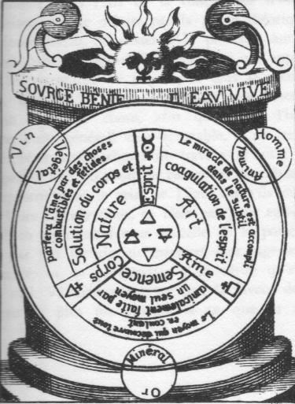

Philosophe et Chymiste très expérimenté
Traité Chymico-Philosophique
des
CHOSES NATURELLES
et SURNATURELLES
des METAUX et des MINERAUX

Traduit sur l'édition de M.DC.LXXIX
chapitre I
- chapitre
II : de la première teinture
et racine des métaux - chapitre III
: de l'esprit de Mercure -chapitre IV : de l'esprit
du cuivre - chapitre V : de la marque de Mars,
de son esprit et de sa teinture -chapitre VI
: de l'esprit de l'Or - chapitre VII : de la
teinture de la Lune -
chapitre VIII
: De la doctrine de l'Âme de l'étain ou de sa teinture - chapitre
IX
: De l'esprit de Saturne ou de la teinture du plomb -


B. L.
Puisque je me suis proposé de publier en langue latine, successivement, les plus précieux écrits sur l'or du philosophe allemand le plus célèbre et le plus expérimenté dans l'Art de la Chimie, ce n'est point sans raison que je débute par la partie théorique, car sans doute, avant de passer à la pratique, auras-tu à t'exercer dans la théorie. En effet celui qui applique à l'une les ressources de son esprit sans le secours de l'autre, travaille en vain. J'ai voulu que chacun soit prévenu de cette chose, afin que selon l'habitude actuelle, aussi générale que détestable, il ne tende pas à interpréter toutes choses de travers, et qu'il ne saisisse pas là une occasion de calomnier les Philosophes qui reposent dans le sein de Dieu, car s'ils nous ont laissé leurs élucubrations, ce n'est pas pour eux-mêmes, mais bien en notre faveur et celle de la postérité. Si donc, par ton incurie, tu méprises leur sagesse loyale et sincère, tu ne parviendras à la vérité qu'avec un grand mal. Va maintenant, et avec la faveur de Dieu, parviens le plus tôt possible à ce que tu attends.
Voulant maintenant traiter de la première teinture racine des métaux et des minéraux, je me donnerai garde d'oublier les choses spirituelles et la manière dont les métaux et les minéraux sont d'abord conçus, puis naissent corporellement, aussi me suis-je déterminé à débuter par quelque discours, où je montrerai que tout ce qui existe se divise en deux classes, en choses naturelles et en choses surnaturelles.Ce qui est visible, compréhensible et revêtu de sa propre forme est naturel. On qualifie de surnaturel ce qui est véritablement incompréhensible et spirituel, vu que cela doit être reconnu et discerné par la seule foi ; telles sont la création, et bien davantage l'éternité de Dieu, infinie, impénétrable et immense, que la nature ne peut atteindre et que la raison humaine ne peut concevoir. Doit donc être réputé surnaturel ce que la raison nt doit pas percevoir, mais qu'elle doit atteindre par la foi, et c'est assurément le cas de la Souveraineté céleste, ressortissant à la Théologie, qui juge les âmes. A la classe des choses surnaturelles se rattachent encore les Anges de Dieu doués de corps glorifiés : par une entière soumission à leur Créateur ils accomplissent tout ce qui ne saurait répondre autrement aux forces d'aucune créature encore que les ouvrages qu'eux-mêmes manifestent soient dérobés à la vue du monde, non moins que ceux accomplis avec la permission divine par les esprits infernaux.
Et d'abord n'est-ce pas de manière surnaturelle que sont perçues et connues les oeuvres de Dieu, grandes oeuvres qui ne peuvent être jugées ni comprises par aucune intelligence humaine : telles sont notamment la grâce immense et la bonté, dont Dieu plein d'amour pour les hommes, les gratifie d'une manière infinie et insondable ; tels sont encore tous les miracles accomplis par le Christ, notre Rédempteur et notre Sauveur, en diverses et fréquentes circonstances pour confirmer sa toute puissance et sa gloire : il ressuscita de la mort Lazare, la fille chérie de jaïre, et le fils de la veuve Naïn, il rendit la parole aux muets, l'ouïe aux sourds, la vue aux aveugles, toutes choses qui sont des merveilles surnaturelles de Dieu, pareillement sa conception, sa résurrection, sa descente aux enfers, son ascension au ciel, choses mystérieuses au plus haut point et que la foi seule nous permet de concevoir.
Sont encore du ressort des choses surnaturelles les enlèvements d'Élie et d'Énoch au ciel, de même que le ravissement de saint Paul au troisième ciel. D'autre part beaucoup de choses surnaturelles sont produites par l'imagination, les visions et les songes, de sorte que fort souvent de nombreux miracles proviennent de l'imagination, à la manière des brebis qui naissaient bigarrées grâce aux bâtons diversement nuancés plongés dans l'eau. Les Mages en Orient était avertis en songe par Dieu de ne pas revenir vers Hérode : comment ne pas trouver singulier et mystique le nombre ternaire des personnages et de leurs cadeaux, ainsi que l'étoile surnaturelle. Fût-il plus naturel le songe de la femme de Pilate condamnant injustement à mort notre Seigneur et Sauveur JésusChrist ? Et cette vision des anges par les pasteurs à la naissance du Christ, et aussi celle des femmes à son sépulcre ?
Quoi encore ? Assez souvent d'autres faits surnaturels accompagnèrent les vaticinations des Prophètes et des Saints ; la voix de l'ânesse parlant à Bileam n'était pas chose dans l'ordre naturel, comme l'interprétation des songes par joseph dépassait les forces de la nature. Assez souvent aussi, Dieu, par le ministère de ses Anges, nous protège contre une infinité de maux, et nous soustrait à des périls et des contraintes que les seules forces de la nature ne suffiraient pas à écarter de nous.
Ainsi donc toutes ces choses et plusieurs autres, auxquelles l'âme doit être attentive sont célestes et du ressort de la Théologie. Vient ensuite ce qui est surnaturel dans les créations visibles de Dieu, telles que nous les percevons dans le firmament, les planètes et les étoiles, ainsi que les éléments, choses qui dépassent aussi notre raison, toutefois nous en observons le cours à l'aide des spéculations du calcul qui font partie de la doctrine astronomique. Les créatures de cette sorte manifestent leurs opérations selon une loi bien visible, mais cependant incompréhensible, et par une qualité magnétique, de là sont également produits de nombreux miracles tout à fait étrangers il la nature. Tenez pour certain que le ciel s'épanche dans la terre et que la terre à son tour répond au ciel, et en effet la terre couvre aussi sept planètes, engendrées par les sept célestes au moyen d'une certaine impression vraiment spirituelle, car les astres engendrent tous les Minéraux. Et tout cela se fait d'une manière incompréhensible et spirituelle, et semble par suite surnaturel : voyez deux êtres humains qui s'aiment mutuellement, le corps humain est visible et physique, tandis que l'amour est invisible, spirituel, incompréhensible et surnaturel et ne peut se comparer qu'à l'attraction magnétique. Et en effet l'amour invisible introduit dans l'imagination spirituelle par un désir ardent s'apaise uniquement par l'assouvissement de cette soif.
Ainsi en est-il quand l'amour du ciel tend vers la terre, et que l'affection de la terre tend vers l'homme, c'est-à-dire quand l'amour du macrocosme tend vers le microcosme, bien que celui-ci dépende de celui-là ; lors donc que la terre dans u n désir de son imagination invisible attire à elle l'amour du ciel, alors jaillit la conjonction du supérieur avec l'inférieur à l'exemple du mari et de la femme que nous nous imaginons sous la forme d'un seul corps. Après cette conjonction la terre imprégnée par cette sorte d'influence commence à mettre au jour un fruit, selon que s'est produit l'influx, puis après la Conception, ce fruit est échauffé par les éléments et mûri jusqu'à la perfection. Est également du domaine des choses surnaturelles la manière dont la vertu efficace de la chose surnaturelle descend dans la chose naturelle.
Parmi les choses surnaturelles prennent encore place tous les arts magiques et cabalistiques, à savoir ceux qui procèdent de la véritable lumière de la nature et non ceux qui sentent la superstition ou les procédés illicites de conjuration des enchanteurs. J'entends ici une magie de même nature que celle par laquelle les Mages furent instruits en Orient, et tirèrent leurs jugements de l'inspiration divine selon un art licite, magie que les anciens avant nous reçurent des Egyptiens et que possédèrent les Arabes, qui avant l'invention de l'écriture, observèrent les choses et les notèrent par des signes, des caractères et autres du même genre. Il n'est pas défendu non plus d'user de ces rites expiatoires auxquels le Christ lui-même avait recours, comme nous le lisons dans l'Écriture : « Et s'approchant des enfants, il les bénissait en leur imposant les mains. » Par contre ce qui est contraire à Dieu et à sa parole, doit être rejeté et défendu, n'étant certainement pas fait par Dieu, mais par le diable même. Quant aux choses surnaturelles se rapportant à la magie qui ne sont en opposition ni avec Dieu ni avec sa parole, elles ne portent aucun dommage à l'âme.
Pour les visions qui arrivent assez souvent aux hommes de Dieu, c'est à bon droit qu'on peut leur attribuer une place parmi les choses étrangères à la nature. Tout ce que l'homme doit saisir par spéculation de l'esprit est surnaturel, et par contre tout ce que l'homme peut toucher, voir et prendre est naturel.
Une troisième sorte de choses naturelles et surnaturelles repose sur la Médecine, autrement dit sur la force active de, quelque chose que ce soit. Cette Médecine de toute chose doit en premier lieu être attirée hors d'un certain corps visible, saisissable et naturel, puis être conduite à un plus haut degré au moyen d'une opération plus accomplie, spirituelle et surnaturelle, afin que l'esprit, qui au commencement a été infusé et accordé au corps pour vivre, puisse être libéré et poussé à travailler, comme la nature spirituelle, et le feu à qui on laisse des évents, sont poussés à brûler ; et rien ne peut suffoquer, éteindre et interrompre la vie ardente pour faire obstacle à cet esprit, mais si l'on a négligé de séparer l'âme et l'esprit du corps, il est absolument impossible de poursuivre aucune opération efficace convenable, et qui cependant serait nécessairement requise...; or tout ce qui est perceptible à la vue, continu et concret d'une existence naturelle et corporelle. Et véritablement, sitôt accomplie la séparation, la vie quittant le corps, la chose reçoit sa pleine efficacité. Et le corps naturel une fois séparé, la nature spirituelle est libérée de manière à pouvoir pénétrer et est transformée en médecine spirituelle et surnaturelle. En bref, toutes les choses tangibles, sans aucune exception, sont naturelles, et doivent être véritablement élevées à un état surnaturel, si nous voulons les destiner à la Médecine, car seul le surnaturel renferme la force vivante capable d'agir, tandis que le naturel possède seulement la forme périssable et sensible.
Lorsque Adam fut créé, il était sans âme et aucune vie ne l'avait doué d'une force active, mais aussitôt que l'esprit vivifique le pénétra, il produisit par une aspiration surnaturelle sa force de vie et sa faculté de vivre. Pour mieux dire, en quelque chose que ce soit, le naturel et le surnaturel sont comme couplés en titi seul et liés ensemble dans leur domicile, et c'est par quoi se maintient la perfection de chaque chose. Dans cet univers où toutes choses ont été créées, certaines sont surnaturelles, et ce sont les seules ayant âme et esprit, quant aux autres elles sont naturelles et surnaturelles, et concernent également les Eléments et le firmament, les minéraux, les végétaux et les animaux, ce qui devient manifeste par la génération, quand l'âme sort du corps, à qui elle laisse un domicile vide.
Considère en outre, que le macrocosme et le microcosme ont été composés, formés et créés de la première matière par la toute puissance dans ce commencement, où l'esprit éternel du Seigneur était porté sur les eaux; d'abord fut fondé le macrocosme, ciel et terre, puis après que l'eau eût été séparée de la terre, ce fut le microcosme, l'homme, évidemment tiré du macrocosme. L'eau était la matière au-dessus de laquelle était porté l'esprit éternel de Dieu. Tiré de la terre la plus noble ou même de sa quintessence, le microcosme était modelé par l'aquosité résiduelle de la terre, mais toutes ces choses étaient roule ment naturelles. Après l'inspiration ardente, véritablement divine, intervenait aussitôt le surnaturel, après quoi le surnaturel et le naturel étaient mutuellement conjoints. Le macrocosme est éphémère et périssable bien qu'il constitue un monde neuf, mais le microcosme est éternel. Le macrocosme à sa fin retournera au néant d'où il a été tiré, mais le microcosme sera purifié par l'esprit de Dieu, parce qu'il le possède, et de l'eau terrestre primitive il fera une eau céleste purifiée, alors apparaîtra Manifestement que la première matière aura été changée en l'ultime, et l'ultime en la première. Et la véritable cause de la destruction du macrocosme est que l'esprit du Seigneur mutera le siège et le domicile qu'il a en lui, pour les transférer dans le microcosme. L'homme est en effet le temple du Saint-Esprit, s'il ne se souille lui-même, et ne se donne à l'enfer, lui seul produit ce désaccord, et Dieu s'éloigne de celui qu'il a créé à son image et qu'il s'est donné pour temple. Et ainsi tout ce qui a été donné au macrocosme est également contenu dans le microcosme, à savoir le ciel et la terre avec les éléments, toutes les choses qui leur sont affines et conjointes depuis le firmament.
Nous reconnaissons aussi que dans la première création trois choses sont nées, tirées du néant, l'essence animique, l'essence spirituelle et l'essence visible, qui remplissent le rôle de l'eau mercurielle, de l'exhalaison sulfureuse et du sel terrestre. Ces trois firent paraître le corps entier et parfait de toutes choses. Il y a déjà longtemps j'ai enseigné dans mes écrits, là où j'ai traité du microcosme, comment de là se produisent ensuite en perfection les quatre éléments.
Afin de rapporter plusieurs faits touchant les choses natu relles et surnaturelles, spirituelles et corporelles, parlons de la: Chanaanéenne guérie d'un flux de sang de dix ans par le seul contact du vêtement du Fils de Dieu, et reconnaissons que pour, une maladie naturelle le médicament était véritablement surna turel : par la foi elle avait obtenu cette aide du Christ.
De même nous jugeons insigne et surnaturel au plus haut point le miracle de ces trois hommes Sadrach, Mesach et Abednego, jetés dans une fournaise par ordre du roi Nebucadnezar, et qui néanmoins en furent délivrés sains et saufs par une protection divine. La confusion des langues et l'apparition d'idiomes divers survenues lors de l'écroulement de la tour de Babylone, qui devait s'élever jusqu'au ciel, ont aussi été considérés comme miracle surnaturel. Et pour les Israélites coupables d'avoir combattu les Midianites sans l'ordre de Dieu, l'obligation de laper l'eau en tirant la langue à la manière des chiens était également surnaturelle. Lorsque Moïse, l'homme de Dieu, frappant de son bâton le rocher le plus dur en fit jaillir de l'eau ; il mettait en déroute tout raisonnement humain, de même qu'il surpassait les forces de la nature lorsqu'il changeait l'eau salée en une boisson douce. Le passage à sec des Israélites à travers la mer Rouge, de même que le reverdissement de la verge d'Aaron avaient lieu de façon surnaturelle. Et plus que tout la sortie du Christ hors d'un tombeau scellé, son apparition aux deux pèlerins d'Emmaüs, sa manifestation à travers des portes fermées étaient des choses divines et surnaturelles. De nombreux autres exemples empruntés à l'Histoire sainte pourraient encore être cités, si nous n'étions contraints d'être brefs.
On assimile aux choses surnaturelles toutes celles qui se manifestent dans les mines métalliques, les apparitions corporelles d'esprits, les spectres, les pygmées et les nains, qui assez souvent se rendent visibles et présagent des biens ou des maux, la ruine ou l'opulence, de même toutes les autres figures et impressions des métaux que l'on trouve sous terre, hommes, poissons et autres animaux formés par l'imagination des trois principes, mûris et parfaitement cuits par la terre et les autres éléments. A cela se rattachent encore les monstres de la terre, et les choses de ce genre auxquelles sont données sous terre des formes extraordinaires à des époques déterminées en dehors desquelles on ne peut en trouver d'autres nulle part; il est vrai qu'en d'autres temps ils apparaissent de nouveau réellement, et se présentent à nos yeux.
A cela se rapportent aussi toutes les visions qu'on a coutume d'obtenir par l'eau, les miroirs, le cristal et autres moyens, par les sceaux et les caractères, visions qui cependant diffèrent en ce que certaines, quoique simplement naturelles, montrent toutefois des choses surnaturelles. Les autres, provenant d'incantations, ne sont ni naturelles ni surnaturelles mais diaboliques, c'est pourquoi on les classe dans la magie démoniaque, et on les interdits justement à tous les chrétiens. C'est avec raison aussi que tous ces moyens sont réprouvés et réfutés par les textes sacrés comme contraires à la parole de Dieu et à son ordre, ainsi que par les cabalistes véritables et naturels, et je le dis pour bien établir entre les choses naturelles, surnaturelles et contre nature une discrimination certaine et une règle déterminée.
Semblablement toutes les naïades, sirènes, succubes et autres semblables nymphes ont place parmi les choses surnaturelles, de même que les esprits terrestres, et aériens, qui n'offrent à l'ouïe, à la vue et au toucher pour annoncer une mort ou un autre malheur, ou dont l'apparition en certains lieux rot l'indice de trésors et de fortune ; il faut leur adjoindre les esprits du feu, qui se montrent sous la forme d'un feu ou de brandons ardents; tous sont des esprits incorporels, sans être toutefois de ces esprits infernaux qui prennent possession des hommes comme de trésors éternels, ainsi que le roi des enfers Lucifer et les excommuniés de son troupeau ont coutume de faire. Les esprits donc de cette première nature se présentent à l'admiration des hommes de façon surnaturellle, ils se développent, s'instruisent et s'alimentent uniquement à partir des éléments et par suite ont leur fin dans ce monde terrestre : étant dépourvus d'une âme rachetée, en mourant ils disparaissent totalement. J'en ai assez dit et n'ajouterai rien sur ce sujet, mais je renvoie à d'autres temps et à un endroit plus convenable le soin d'en faire ultérieurement un ouvra,ge, dans lequel je consacrerai un traité particulier aux visions et aux apparitions spirituelles, que la plupart jugent être contre nature, encore que certaines soient en réalité naturelles, mais trouvées surnaturelles dans la mesure de leurs opérations et de leurs qualités merveilleuses.
Pour mieux confirmer ma thèse, je prétends que beaucoup de choses en médecine produisent leurs effets suivant un mode surnaturel, se manifestant et agissant d'une manière simplement magnétique, par une certaine vertu spirituelle attractive qui s'entretient grâce à l'air, car celui-ci est un milieu intermédiaire entre la médecine et la maladie. Tout comme l'aimant se tourne sans cesse vers l'astre austral, bien qu'il en soit distant de nombreux milliers de milles, il se produit dans ce cas une opération spirituelle et une inclination si grandes que des distances si considérables sont néanmoins parcourues par l'intermédiaire de l'air jouant le rôle de chaîne; ce genre de force attractive est bien connu du vulgaire, au point de passer pour une simple habitude qui ne fait que s'opposer au changement, et nul ne va plus loin et n'observe la qualité occulte, d'où la vertu active de cette espèce tire son origine. Pareillement les blessures et les maladies peuvent être guéries, bien que de la même manière le patient et le médecin se trouvent séparés par une longue distance, et il n'est nul besoin d'employer pour cela des rites expiatoires, des charmes et d'autres moyens illicites contraires à Dieu et à la nature, mais seulement ces moyens en qui réside une, vertu magnétique attractive. Si quelque blessé obligé de quitter la place laisse à un médecin les armes par lesquelles il a été blessé, ou du sang sorti de sa blessure, et que ce dernier, leur administre correctement des moyens légitimes de guérir selon le traitement habituel des blessures, on ne doit pas considérer comme résultant d'un charme le rétablissement régulier et sans incertitude du blessé. Cette sorte de guérison a lieu uniquement par une vertu attractive du médicament qui par le moyen de l'air est transporté à la blessure pour la purifier et accomplir son opération spirituelle.
Ces paroles paraîtront sans doute à plusieurs difficiles à comprendre et étrangères aux forces de la nature, et beaucoup combattront cette doctrine comme contraire en tous points à la nature ; la plupart en arriveront à ce propos aux altercations les plus graves pour savoir si cette guérison est naturelle ou non, si elle est possible ou non, ou s'il s'agit d'un charme, mais cette controverse est rendue inutile par la remarque suivante : cette guérison est parfaitement naturelle, mais c'est le mode opératoire qui est surnaturel et spirituel, puisque réalisé par une certaine cause attractive particulière et incompréhensible. On démontre encore que cette méthode curative agit en dehors de tout charme, en disant qu'elle procède d'une union avec Dieu notre Créateur et son Verbe tout amour, sans l'intervention d'aucun charme ni d'aucun autre moyen contre nature, union tout à fait naturelle, issue d'une force surnaturelle, invisible, incompréhensible, spirituelle et attractive qui, tirant son origine des astres, parfait l'opération par les éléments.
Enfin je puis revendiquer que cette guérison ne résulte pas d'un charme, car on sait bien que le diable se réjouit des calamités et des infortunes du genre humain, plutôt que de prêter assistance au salut d'aucun homme, ce qu'il fait d'ailleurs par ses propres moyens et sans l'assistance divine. I1 y aurait encore beaucoup à dire sur cette forme magnétique pour éviter diverses erreurs, mais je m'arrête et me force au silence en attendant d'avoir rapporté certaines choses concernant les miracles naturels du monde.Les esprits épais et rudes, farcis cependant d'une opinion sur la philosophie, et tous ceux qui ont les sens corrompus n'auront fait aucune distinction en tout ceci, mais celui qui est sage et habile peut très facilement distinguer les choses naturelles des surnaturelles. Que ce dernier soit attentif et examine ceci par analogie avec quelque exemple plus grossier. Beaucoup d'animaux en période d'hiver sont dépourvus de toute vie, mais dès que revient l'été, la chaleur naturelle engendre en eux une vie nouvelle, de sorte que le corps ressuscite dans la substance même dans laquelle auparavant il a manifesté le mouvement vital, tout comme un brin d'herbe meurt en hiver, puis renaît à nouveau véritablement. On trouve toute naturelle la mort de ces choses, mais l'apparition d'une vie nouvelle, encore que bien connue, est surnaturelle. Et parce que l'homme s'accoutume à toutes ces choses, il est bien vrai qu'au long de ce traité des choses naturelles et surnaturelles, bien peu lui seront accessibles de toutes celles qui dans la suite devront être pesées et recherchées.
La plupart des gens ont coutume d'oublier d'un coeur léger que le tempérament de l'homme est lui aussi surnaturel. Et ces monstres qui viennent au monde avec des taches, ce sont là choses assurément naturelles, mais provenant surnaturellement de l'imagination innée que la mère de l'enfant imprime accidentellement par son imagination cette forme et ce tempérament surnaturels, de sorte que l'on voit souvent des hommes soumis à certaines habitudes, ne pouvoir jamais y renoncer, quoi qu'ils fassent pour s'en défaire. Cette sorte de force innée en l'homme est naturelle, mais la conception que l'imagination de ces choses a fournie dans l'utérus de la mère est surnaturelle, et liée aux impressions du ciel.Enfin je ne disconviens pas de ceci : pour traiter sans erreur des choses qui surpassent les forces de la nature, personne ne peut s'appuyer sur des fondements appropriés, inattaquables et par des raisons indubitables, à moins de bien connaître d'abord ces sortes de phénomènes qui se manifestent à nous par leur seule évolution physique, et qui ont assurément tiré des choses surnaturelles leur origine et leur forme. Mais qu'adviendra-t-il ensuite ? Celui qui aura compris prouvera par une expérience infaillible qu'il a ravi la palme à ceux qui ôtent tout crédit aux choses surnaturelles. Ce faisant il bouleversera les opinions de tous ces gens, qui disputant des choses naturelles sans se préoccuper de leur fondement, n'avancent rien d'autre que des sornettes et exposent à la légère leurs cogitations.
Afin de réaliser véritablement mon intention, avec la permission de DIEU, et pour bien saisir la doctrine de la première teinture, racine et génération des métaux et des minéraux, il faut savoir que la teinture, qui est en même temps la racine, de tous les métaux, est aussi un esprit surnaturel volatil et igné, qui se soutient dans l'air et cherche de façon naturelle son siège dans l'eau et la terre où il peut se reposer et opérer. On trouve cet esprit dans tous les métaux et moins abondamment dans l'or que dans les autres, parce que le corps de l'or étant parfaitement cuit, mûr et fixe, est solide, ferme et compact, et pour cette raison l'or ne peut recevoir plus que ne requiert son corps. Les autres métaux sont dépourvus de corps fixe de cette espèce, toutefois leurs pores sont ouverts et largement disséminés, par suite l'esprit de la teinture peut les pénétrer plus abondamment et les occuper. Mais puisque les corps de ces autres métaux ne sont pas fixes, la teinture, qui ne peut subsister avec des corps vagabonds, est obligée de sortir. Comme donc la teinture de l'or n'existe dans rien avec plus d'abondance que dans Mars et Vénus, c'est-à-dire le mari et la femme, l'esprit de la teinture, après la destruction de leurs corps, s'enfuit de là pour enrichir de son sang l'or préparé renfermé et le rendre volatil en le nourrissant et l'abreuvant.
De là cet or volatil saturé de sa nourriture et de sa boisson augmente son propre sang, le dessèche par sa chaleur native au moyen d'un feu vaporeux. Ainsi est obtenue une certaine victoire réciproque, qui procure la fixité la plus grande, afin que l'or passe dans une médecine fixe au suprême degré, qu'il ne puisse par suite d'une surabondance de sang manifester aucun corps, à moins qu'en contrepartie ne lui soit ajouté un corps très ample où s'étende le sang fixe en excès.Et à cause de la chaleur considérable du sang fixe léonin, ce corps métallique ajouté est pénétré comme d'un feu, est purifié de toutes ses impuretés et se trouve cuit instantanément jusqu'à son entière maturité et fixité, au point que c'est l'esclave qui entasse les richesses pour le maître. Celui-ci ne peut d'abord rien désirer du haillon de l'esclave, puisque c'est à lui-même que la nature a fait cadeau de l'unique vêtement d'honneur, et pour que le maître et l'esclave puissent cohabiter, le Roi à son tour ne peut moins faire que de distribuer à ses gardes l'héritage et le durable vêtement de cour tirés du royaume, où il a auparavant levé tribut sur ses sujets. Or ne sois pas surpris que le Roi ait besoin de l'assistance réciproque de ses gardes, le manque de fixité de leurs corps est cause en effet qu'ils ne peuvent apporter que peu d'aide, encore qu'ils reçoivent beaucoup. Mais quand le Roi peut être fait participant de cette chose, il est mieux en état que les métaux impurs de mettre en déroute le froid et le chaud. Donc recevant de cette manière de tous ceux qui restent, il devient le seul vainqueur, et remporte le très glorieux triomphe de l'opulence et de la santé pour une longue vie.
Je crois t'avoir au commencement déjà suffisamment pénétré de cette doctrine du naturel et du surnaturel concernant la première teinture et racine des métaux et des minéraux, connaissances qui permettent de disposer la pierre angulaire, et de fonder en son espèce la pierre très véritable, où la nature a très profondément dissimulé et enfoui ses dons.
C'est dans des esprits excessivement ignés et teints que par l'opération des éléments cette pierre a acquis du ciel des astres cette couleur, au point de pouvoir ensuite teindre et fixer les choses qui n'étaient pas encore teintes ni fixes, comme la lune, à qui manque la couronne dorée et la fixité, et aussi comme saturne, jupiter et mercure. Et bien que mars et mercure n'aient vraiment qu'un besoin très minime d'un vêtement, et puissent le communiquer aux autres cinq, je dis cependant que, sans le Lion, et du moment qu'ils ne sont pas assez pourvus de la fixité de leur mercure et de la subtilité de leur sel, ils ne peuvent rien conserver de ce qui conduit à la richesse. Il n'en est pas de même s'ils ont été vaincus en combat par le lion, de sorte qu'élevés surabondamment dans une perfection qui n'est pas modique, ils aient chacun remporté le triomphe ; et cette perfection est cachée dans l'étoile signée ou dans son aimant, et c'est d'elle que les métaux ont eux-mêmes reçus tous leurs dons.
J'en arrive maintenant à la génération dans l'espèce, au moyen par quoi l'Archée [1, 2] manifeste sa vertu propre, la répand et la met en lumière, d'où paraissent aux yeux toutes les formes des métaux et des minéraux, d'où elles sont formées par les esprits ignés, insaisissables et volatils des minéraux et d'où elles prennent corps. Accepte donc pour l'instant ce que j'ai dit plus haut, applique-toi à l'étude, aie souci de ne pas oublier les grandes choses et de ne pas laisser de côté les plus utiles pour observer au contraire avec grand soin la lettre stérile, en délaissant la voie véritable. De tout ce que j'écris ici, je le crains, beaucoup considéreront les plus grands mystères comme les moindres, et tiendront les moins importants pour les plus grands.
Il te faut savoir maintenant que pour tous les métaux et minéraux de la terre il n'y a qu'une seule substance, une seule mère aussi, d'où toutes choses ont reçu du sort, chacune en son genre, leur naturel tout entier et leur essence corporelle. A vrai dire la substance [1] dont il s'agit, émanant du centre, s'épand initialement en trois parties, à partir desquelles elle fonde la réalité corporelle, en même temps que la forme déterminée de chaque métal. Et sous terre, par le seul moyen des éléments, ces trois parties sont nourries à partir du corps du métal lui-même, jusqu'à ce qu'elles aient acquis leur perfection. Et en vérité la substance descendant du centre a été conçue par les astres, produite par les éléments et formée par une chose terrestre, substance bien connue certes et cependant mère véritable des métaux et des minéraux ; et c'est en tous points la substance et la mère, d'où l'homme lui-même a été conçu, mis au monde, conservé et revêtu d'un corps, substance équipollente de toutes manières avec le centre, puisque tout ce qui est contenu dans le macrocosme, l'est également dans le microcosme et vice versa.
Or les choses qui existent en même temps dans le macrocosme et le microcosme sont manifestées aussi dans le centre du monde, vu que ce qui compose le macrocosme avec le microcosme est une certaine âme unissant et copulant l'esprit avec le corps. Cette âme, on la compare à l'eau, et sans doute c'est une eau tout à fait véritable, quoique ne mouillant nullement comme l'autre eau, mais c'est une eau céleste, sèche sous un certain état liquide et métallique, eau animée, amie de tous les esprits, qu'elle réunit à son corps et assemble en une vie parfaite. [1, 2, 3, 4, 5]
De là on démontre à juste titre qu'une eau enfante tous les métaux, eau qui a été échauffée par un feu brûlant aérien comme par un esprit de soufre, en sorte que sa propre cuisson a introduit une âme dans le corps terrestre; en celui-ci, et pour qu'il ne soit pas détruit par la corruption, le sel joue manifestement le rôle d'un préservatif contre la corruption.
Au commencement donc de la génération c'est en premier lieu l'hydrargyre [1, 2, 3, 4, 5, 6, 7] qui est produit, et jusqu'à ce point il apparaît avec sa coagulation subtile, parce qu'il lui a été communiqué en propre peu de sel; de ce fait il manifeste un corps plus spirituel que terrestre. Viennent ensuite les autres métaux, qui tous tirent leur croissance de la substance de ce même hydrargyre, et jouissent d'un sel plus abondant, d'où procède leur animation. Maintenant commençons par l'esprit de Mercure.
J'use habituellement d'un style singulier, qui paraît extraordinaire à bien des gens, la raison en est seulement que pour rester attaché à mon expérience de la science, j'ai rejeté toutes les tromperies, mises en déroute par ce que je sais, car les yeux prévalent toujours sur les oreilles, et jamais la vérité n'a failli à triompher du mensonge. J'affirme donc que toutes les choses visibles et compréhensibles sont formées à partir de l'esprit de Mercure, qui passe avant toutes choses terrestres de cet univers, et auquel tout doit son origine. C'est en lui en effet que l'on trouve ce qui peut l'emporter sur toutes choses, et ce que recherche celui qui cultive l'art. C'est le principe [1] pour oeuvrer sur les métaux, après qu'il a abouti à une essence spirituelle qui est un poison achevé; volant sans ailes [1] çà et là c'est un vent agitant, qui expulsé de son domicile par Vulcain [1, 2, 3, 4, 5, 6, 7] est poussé de force dans son chaos [1], en qui il régresse et -se résout en les Eléments, où par une vertu magnétique procédant de l'amour il est attiré par les astres, et d'où auparavant il s'est élevé et a été produit, parce qu'il est retenu par le désir de son semblable.Mais vraiment si l'on peut saisir et rendre corporel cet esprit de Mercure, il se résoudra en un corps, et aboutira à une eau pure et limpide, et c'est là l'eau spirituelle et la première racine mercurielle des minéraux et des métaux, [1] spirituelle, ne tombant point sous les sens, incombustible, [1, 2] sans aucun mélange d'aquosité terrestre, et c'est l'eau céleste, sur laquelle existent tant d'écrits. Par cet esprit de Mercure tous les métaux peuvent en effet sans aucun corrosif être brisés, mis à jour et résolus en leur première matière, lorsqu'il en est besoin. Cet esprit est comme un réparateur des hommes et des animaux, à la manière de l'aigle, [1] qui consume tous ses défauts et prolonge extrêmement sa vie. Cet esprit de Mercure est la clef principale de mes autres clefs, dont j'ai traité au commencement, et ici je m'exclamerai :
« Approchez, vous qui êtes bénis, afin que vous soyez oints d'huile et recréés par l'eau; abandonnez vos corps aux aromates, afin d'en écarter la putréfaction et la fétidité».L'eau céleste est en effet un principe, et l'huile un milieu, où ne se consume pas ce qui est confectionné à partir du soufre, spirituel bien entendu. Et c'est là le baume du sel devenu corporel, qui est uni à l'eau par le bon office de l'huile. Je parlerai plus au long de cela dans la suite, lorsque j'en aurai rapporté et marqué quelque chose.
Afin d'exposer de façon plus développée l'essence de cet esprit de Mercure, sa matière et sa forme, j'affirme que son essence est bienheureuse, sa matière spirituelle et sa forme terrestre, et ceci, quoique apparemment incompréhensible, doit cependant d'une certaine manière être compris. Ces mots, il est vrai, sont subtils, et beaucoup traiteront mon discours de chou cuit et recuit, et de belles paroles engendrant de belles idées. C'est tout à fait exact, ces paroles sont absolument merveilleuses, aussi requièrent-elles des hommes remarquables pour en concevoir le sens. Cet écrit ne peut aucunement servir aux villageois, pour apprendre à graisser les essieux, ni ne peut apporter quoi que ce soit à ceux qui sont entièrement novices dans l'art, encore que gonflés [allusion au Mercure commun] au possible par la conviction d'un grand savoir. Celui-là seul est docte à mes yeux, qui, ayant souci de la parole divine, et approfondissant par une connaissance véritable les choses de la terre qui doivent être discernées par la raison, peut démêler les ténèbres de la lumière, [1] car le mauvais a été dissimulé dans le bon.
Il ne t'importe donc pas de savoir ce qui concerne le commencement de cet esprit d'hydrargyre, observe seulement que son commencement est surnaturel, à lui concédé dès la création par les astres et les éléments, afin qu'il entre dans la chose terrestre. Et selon que je t'en ai averti, note ceci, qui est indispensable : laisse les choses du ciel et saisis les seulement dans la foi de ton âme; renonce aussi aux choses sidérales, puisque les impressions sidérales de ce genre sont invisibles et incompréhensibles. Les éléments aussi, au temps de sa formation, ont déjà mis au jour cet esprit, et pour cette raison laisse les passer, attendu que personne hormis Dieu ne peut produire les éléments; appuie-toi uniquement sur ton esprit élaboré, déjà participant d'une forme et privé d'une forme, compréhensible et incompréhensible, présenté cependant visiblement, ainsi tu auras suffisamment de la première matière, d'où sont nés tous les métaux et les minéraux : c'est une chose unique et une matière telle, qu'elle est unie au soufre du chapitre suivant et qu'elle entre en coagulation avec le sel du chapitre cinquième, [le soufre du cuivre est un sel de potassium ; le sel de Mars est un vitriol ; cf. laboratoire 2] pour que de là résulte un corps et la parfaite médecine de tous les métaux, et que non seulement elle les engendre en terre, comme dans le macrocosme au commencement, mais aussi que dans le microcosme au moyen d'un corps vaporeux, elle les transmute l'un dans l'autre avec augmentation. Et peux-tu après cela ne pas admirer tout ce que le Très Haut a permis, et que la nature a suscité !Il ne manquera pas, je pense, de gens tout à fait incapables d'ajouter foi à ces choses, gens qui dédaigneront et qui blâmeront ces sortes de mystères trop éloignés de leurs propres conceptions; qu'ils restent, ceux-là, des ânes grossiers et des hommes insipides, jusqu'à leur illumination, qui hors la volonté de Dieu n'est accordée à personne, mais reste suspendue à sa permission. Les hommes véritablement informés et expérimentés en ces matières, ayant beaucoup sué [1, 2, 3, 4, 5, 6, 7, 8] à la tâche, ne me frustreront pas de leur témoignage, affermissant ainsi la vérité, et réellement alors tous mes écrits jouiront de l'approbation finale et seront jugés aussi vrais que l'énoncé de cette vérité : le ciel et l'enfer sont, pour les élus et les damnés, [1, 2] la sanction du bien et du mal.
Ce n'est pas seulement avec la main que j'écris maintenant, mais poussé par l'esprit et le coeur, parce que nombre de docteurs simulateurs et très prétentieux poursuivent sans relâche ces mystères de leur haine, de leur envie, de leurs railleries, de leurs invectives et de leurs outrages, attaquant jusqu'à la moelle la plus cachée, qui tire son principe et son origine du centre. Mais j'ai connu avec certitude qu'un temps doit venir, mes os alors auront été depuis longtemps desséchés jusqu'à la moelle, où les hommes souhaiteront me réclamer au sépulcre, et volontiers, si faire se pouvait, voudraient me ressusciter des morts, mais en vain : voilà pourquoi je leur ai laissé mes écrits, où leur confiance connaitra le sceau de la vérité, [1] en faisant le souhait suprême de témoigner par là à quel point j'ai peu porté envie aux chercheurs, pauvres et autres, de ces mystères, encore qu'il m'eût fort peu convenu de publier tant d'écrits. Je n'ai pu, sans toutefois faire tort à mon âme, m'empêcher de jeter un coup d'oeil à travers le nuage, afin de faire apercevoir le jour, et de chasser la nuit obscure ainsi que la tempête [1] désordonnée et ténébreuse.
Sache maintenant comment dans son opération l'Archée progresse avec le secours de l'esprit de Mercure sur la terre ou dans ses entrailles, [1] et parce que la semence spirituelle dès qu'elle est conçue par l'impression descendue des astres [1] est nourrie par les éléments, sache que ce sperme aussitôt né est converti en une eau mercurielle. C'est aussi de cette manière que le macrocosme au commencement fut créé du néant, et pour ce que l'esprit était en effet porté sur les eaux, on conçoit qu'une certaine chaleur céleste animait la créature aqueuse, froide et terrestre. Dans le macrocosme dominaient une influence divine et l'ouvrage des luminaires [1, 2] célestes, semblablement dans le microcosme une influence suprêmement forte soutiendra grâce à son esprit très divin et très saint le régime propre à opérer dans la terre.
En outre le Tout Puissant avait établi les moyens de parfaire toutes ces choses, de sorte que chaque créature reçut la faculté d'influer sur l'autre, et que l'un fit avancer l'autre dans l'accomplissement des oeuvres du Seigneur. Et comme était cédée à la terre par les luminaires du ciel une certaine influence pour engendrer, et aussi une chaleur interne pour réchauffer et mûrir ce qu'un froid, excessif au regard de son aquosité, apportait à la terre, et plus généralement ce que son genre particulier apportait à chaque créature selon son espèce, de la même manière il faut attirer à travers le ciel étoilé une certaine exhalaison subtile, [1] exhalaison non vulgaire, mais vapeur clarifiée et pure, séparée des autres, qui s'unit avec la substance mercurielle, et dont par l'effet de sa chaleur par un long espace de temps l'humidité se dessèche si évidemment, lorsque survient le caractère propre de l'être animé, et qui manifeste un corps et un baume pour la conservation, et qui d'abord atteint la terre par un influx spirituel et étoilé. De là provient la génération des métaux, [1] toutefois c'est selon le mélange des trois principes, et selon celui des trois qui prend la domination, que le corps est produit.Si donc l'esprit de Mercure est apporté d'en haut à des êtres animés, de là résulte aussi une nature d'être animé ; s'il tend de son plein gré vers des végétaux, de là naît une chose végétale ; si enfin sa propre nature infuse penche vers les minéraux, de là naissent des minéraux et des métaux, n'importe, mais chacun avec son caractère propre selon son élaboration. Les êtres animés sont obtenus d'eux-mêmes, les végétaux d'eux-mêmes aussi mais selon une autre proportion et une autre forme, les minéraux également d'eux-mêmes et chacun par une certaine voie particulière. Il y aurait beaucoup à publier sur tout cela, et il faudrait en enseigner le plus possible.
Sans doute me demandera-t-on ici, et non sans raison, comment l'esprit de Mercure de cette sorte doit être obtenu ou élaboré, par quelle méthode et par quelle voie il doit être préparé pour pouvoir chasser les maladies, et, par transmutation et augmentation de la semence, pouvoir altérer toutes les sortes de métaux seconds qui doivent être pour ainsi dire engendrées dans le microcosme. Ma réponse à cette question, beaucoup certes l'attendront avidement, je ne la leur cacherai point, mais fidèlement je la leur enseignerai, autant du moins que le permettent les ordres divins et la prudence, et en cette manièreR/ : Prends au nom du Seigneur l'hydrargyre rougeâtre rappelant la couleur du cinabre, avec l'or le meilleur, que tu auras vraiment en abondance, triture-les ensemble sans dommage, avant qu'ils aient subi l'épreuve du feu, répand dessus l'huile de mercure préparée « per se » [1] à partir de l'hydrargyre vulgaire purifié et sublimé, dispose pour digérer pendant un mois, et ainsi tu posséderas un extrait plus céleste que terrestre. [l'hydrargyre, par cabale, arginoeiV. le mercure préparé « per se » est une poudre rouge. Il s'agit d'une touche de cabale, le mercure désignant ici l'argent-vif des philosophes] Distille-le lentement au Bain de Marie et les phlegmes s'échapperont, laissant au fond une huile dense qui appelle tous les métaux au mouvement. Verse sur elle le triple d'esprit de vin, circule au Pellican jusqu'à ce qu'elle ait acquis une couleur de sang et cette douceur à laquelle rien ne peut être comparé. Décante l'esprit de vin jusqu'à la liqueur, et de nouveau verse sur elle de l'esprit de vin frais, recommençant autant qu'il faut pour que toute la matière translucide de la saveur douce et de la couleur rouge feu s'élève jusqu'à satiété. Ensuite réunis ces dernières matières, verse le liquide sur du tartre blanc calciné, distille sur la cendre fortement, ainsi l'esprit de vin demeurera dans le tartre, tandis que l'esprit de Mercure sera extrait. Le mêlant avec l'esprit du soufre du soleil et avec son sel, et attirant ensemble les mêmes esprits pour que plus jamais ils ne puissent être séparés, tu t'approprieras une si grande chose, pourvu qu'avec l'or par solution elle atteigne son terme comme une juste mesure et une borne établie, et que dans sa pleine maturité elle soit poussée à la plus-que-perfection ; alors rien ne lui peut être comparé pour échapper aux maladies et aux besoins, et pour acquérir le bien-être généreux du corps et la possession des biens.
Voici donc la voie par laquelle on peut acquérir l'esprit de Mercure, voie que j'ai fait connaître autant qu'il m'a été concédé par celui qui commande à tout. Les tours de main que je t'ai déjà signalés dans ce mien travail, tu les observeras prudemment selon mon très loyal avertissement, afin de ne pas te préparer à cause de moi un bain en enfer, parce que la porte qui donne accès au palais du roi, ne s'ouvre véritablement qu'avec une clef seulement. Cette clef guérit toutes les maladies, l'hydropisie, la phtisie, l'arthrite, le calcul, le mal caduc, l'apoplexie, la lèpre et toutes en général quel qu'en soit le nom. Ce remède guérit aussi tous les genres de maladies vénériennes, et tous les ulcères invétérés, herpès, syreus, morphea, phagédène, fistule, carcinome, ulcères des seins, ainsi que je te l'ai déjà indiqué, et je ne t'ai rien caché.
Observe enfin, si tu ne veux pas de plus amples divulgations, que tout l'art tire son origine de cet esprit de Mercure, qui par l'assistance du soufre spirituel est ranimé et excité à la vie; en même temps s'élève de là une chose céleste, avec le sel en effet et par le sel ils acquièrent un corps et une forme, et de fait tu concéderas que le principe de l'âme, de l'esprit et du corps est un certain aimant, c'est cela et rien d'autre, et on n'en peut juger autrement. En résumé, sans l'esprit de Mercure, qui seul est la véritable clef de l'or potable [1] corporel, la pierre des Philosophes ne peut jamais être élaborée. Repose-toi sur cette opinion et persévère et garde le silence, et du moment que moi-même je renonce à parler davantage, que le silence soit également imposé à moi et à toi. Confie à un autre la recherche, qui ne fournit pas encore la preuve de la chose, mais pour l'exécution ne la confie qu'à toi-même.
DE L'ESPRIT DU CUIVRE
L'étoile Vénus est d'une computation difficile, ce qu'avouent nécessairement avec moi tous les mathématiciens et astronomes, car son cours suit une loi différente de celle des six autres planètes, et pour la même raison son lever diffère, parce que la naissance de Vénus occupe la première table après Mercure, ce qui d'une certaine manière s'applique aussi aux générations des métaux : Mercure donne l'accomplissement, Vénus avec sa beauté attire et fait naître le désir, et ce sont là choses stimulantes. Encore que je ne me déclare nullement astronome, ni expérimenté dans le mouvement des astres, puisque pour moi le temps doit être réservé aux prières dans le sanctuaire, cependant pour ne point passer dans l'oisiveté celui qui me reste après l'accomplissement de mes dévotions, je me suis fixé et établi un but, l'étude des choses naturelles et leur mise en pratique. Or il n'est pas facile de supputer les choses qui se manifestent, naissent et poussent à partir de Vénus, ni d'où Vénus elle-même a été engendrée, parce qu'elle est abondamment pourvue d'un vêtement, dont elle n'a pas besoin elle-même, et hors duquel au contraire elle est rejetée par l'absence de ceux dont elle aurait le plus grand besoin pour devenir constante.Or, sache que Vénus a été munie d'un vêtement par l'action bénéfique d'un soufre céleste, que l'éclat du soleil par long intervalle laisse après lui, car vraiment elle est plus que l'or entourée par une abondance de soufre, comme de fait on le reconnaît par la science. Mais quelle peut être la matière du soufre de l'or, abondante et prédominante en Vénus, et dont je parle moi tellement et tant, sache-le, c'est aussi un esprit volatil et brûlant, [1, 2, 3] qui a la vertu d'envahir et de pénétrer tout, de même qu'en mûrissant et en achevant de cuire les métaux imparfaits, il peut aussi plus que ne croit un ignorant, les élever à sa perfection. Maintenant se pose une question : comment l'esprit du cuivre peut-il pousser les autres métaux imparfaits à sa perfection et à sa maturité, alors que cependant son corps est lui-même imparfait et ne coule pas ? je réponds, ainsi que je l'ai souvent rappelé, que dans le cuivre cet esprit ne peut posséder aucun corps durable en tant que domicile. C'est pourquoi, son domicile étant détruit par le feu, l'hôte fuit, et non sans peine il est contraint de l'abandonner, parce que lorsqu'il habite à titre de locataire, c'est dans le corps fixe de l'or qu'il appuie sa défense, de manière à ne pouvoir être exilé sans une sentence d'un juge particulier, puisque c'est en héritier qu'il a été établi dans ce domicile, et que comme une racine bien enfoncée, il persévère en son corps, afin de n'en pouvoir être éjecté par hasard. La teinture à laquelle participe Vénus, peut être également découverte dans Mars, et certes avec une vertu plus grande et plus efficace. Mars est en effet le mâle de Vénus, ce que j'ai plus longuement rapporté dans les endroits où c'est d'eux que j'ai traité. [il est clairement indiqué ici l'expérience que l'on a suggéré dans la section laboratoire 2]
Une teinture de ce genre est cachée dans le vert-de-gris, [1, 2, 3, 4, 5, 6, 7, 8, 9, 10, 11, 12, 13, 14. Notez que le vert-de-gris est employé par Paul de Canotantopour préparer l'émeraude artificielle] néanmoins on la retrouve dans le « vitriol », et aussi dans un minéral au sujet duquel on pourrait spécialement composer un livre [il s'agit de l'alun]. Or en toutes ces choses est renfermé un soufre qui brûle, et un soufre qui brûle moins, et chose assurément étonnante, le premier soufre blanchit alors que l'autre rougit dans la génération opératrice, mais le soufre inné est incombustible, parce que c'est un esprit absolument pur, d'où l'on prépare une huile incombustible, et c'est là ce soufre même, d'où par une racine unique provient le soufre de l'or.Je révèle beaucoup plus de secrets qu'il ne convient, mais que faire, si je gardais le silence sur tout, je ne pourrais être disculpé, cependant la juste mesure l'emporte en toutes choses, selon que tu l'observeras dans mon dernier traité de la Protestation, où tu ne seras pas oublieux de ma requête. Ce soufre mérite à bon droit le nom de soufre de tous les Philosophes, puisqu'en lui-même est enfouie toute la sagesse, plus qu'en l'esprit de Mercure, qui est manifesté avant lui, et avec lequel même il est uni au sel de Mars par une conjonction spirituelle, de sorte que les trois soient assemblés en un et qu'ils soient élevés en une égale opération. Cet esprit de soufre, de la même manière que l'esprit de Mercure, tire son origine de la région supérieure, mais cependant d'une façon et sous une forme différentes, du fait que les astres manifestent une différence entre les choses fixes et non fixes, entre les choses colorées et non colorées.
La teinture consiste dans le seul esprit du cuivre, et pour la plus grande part en son époux, et c'est une vapeur absolument pure, fétide et d'odeur forte au commencement, qui doit être résolue comme en un liquide, afin qu'on puisse en préparer une huile fétide et incombustible, qui cependant ait nécessairement à obtenir son principe de Mars. Cette huile se complaît en la participation de l'esprit de Mercure, avec lequel tous les corps métalliques s'assemblent soudainement, pourvu qu'auparavant ils aient été préparés suivant la méthode des clefs que j'ai déjà écrites. Je m'écarte ici de l'ordre des planètes, et non sans raison, parce que je suis leurs générations, c'est un ordre auquel je m'attache. Puisque Vénus déborde de soufre, elle a été de ce fait, avec Mars, plus vite achevée de cuire et mûrie que les autres métaux, mais parce que le Mercure fluide leur a fourni peu d'aide, n'ayant en raison de l'excès de soufre pu agir plus énergiquement, ils ont été tout à fait frustrés pour l'entière amélioration de leurs corps non fixes. Maintenant il faut que je te dévoile ici un certain mystère : dans l'or, le cuivre et le fer, sont contenus un même soufre, une même teinture et matière, et cette matière est un esprit de la teinture, un brouillard et une vapeur, comme je te l'ai exposé plus haut, qui a pénétré et peut pénétrer tous les corps. Si lui-même tu peux le prendre, et si tu l'aiguises par l'esprit du sel de Mars, et si avec lui tu joins ensuite selon son poids l'esprit de Mercure, si aussi tu les purges de toute impureté afin qu'ils soient rendus d'odeur suave sans rien de corrosif, tu possèdes de cette façon une Médecine à qui dans le monde rien ne peut être égalé. Et si elle est fermentée par un soleil resplendissant, tu as aplani la voie de l'opération qui pénètre et qui transmue tous les métaux.
Ô éternelle sagesse ! quels remerciements pourrons-nous t'offrir pour ces suprêmes mystères que tu as cachés dans la nature, que les fils des hommes négligent tellement cependant et dont ils dédaignent la connaissance, les choses se trouvent sous leurs yeux et ils ne les perçoivent pas, ils les tiennent en leurs mains et ne les prennent pas, ils manipulent la chose et en ignorent tout cependant, et celles qui agissent ainsi que leurs propriétés internes leurs sont inconnues. Pour toi enfin en vérité, et pour l'amour de Dieu, je découvrirai encore ceci, la racine du soufre Philosophique, soufre qui est un esprit céleste et également le principe du sel spirituel existent séparément avec la racine du Mercure spirituel et surnaturel, et se trouvent dans une matière unique, d'où est élaborée la pierre, qui s'est manifestée devant moi, et non en plusieurs choses, bien que tous les Philosophes traitent surtout du Mercure en soi, du soufre en soi, ainsi que du sel, pour préparer séparément le Mercure, séparément le soufre et séparément aussi le sel. J'affirme cependant que ceci doit s'entendre seulement de leur surabondance, ce que moi aussi j'ai trouvé en plus grande quantité, et qui, en particulier, peut en de nombreuses manières et non sans utilité être employé à la Médecine et aux mutations des métaux. Mais sur le plan universel, le trésor assurément le plus grand de la sagesse terrestre et de tous les trois principes, est une chose unique, et elle est découverte à la fois en une seule chose et extraite de cette chose, elle peut réunir tous les métaux en une chose, et c'est le véritable esprit de Mercure, et l'âme du soufre, conjointement enfermée avec un soleil spirituel sous un ciel, et habitant ensemble en un corps, et c'est le dragon et l'aigle, le Roi et le lion, l'esprit et le cadavre, qui est tenu de teindre le corps brut de l'or en une Médecine, et par là il reçoit assez de puissance pour teindre ses compagnons.[un seul corps laisse cohabiter le Mercure, ou du moins une substance d'essence mercurielle, avec le Sel ou Soufre blanc : nous donnons son nom vulgaire dans la section consacrée aux Demeures Philosophales de Fontenay].
Ô bienheureuse médecine accordée par Dieu ton créateur! Ô aimant céleste qui attire l'amour le plus élevé ! Ô substance fleurie des métaux, quelle puissance efficace est la tienne, qu'insondable est ta vertu, que ta constance est forte ! Bienheureux sur la terre celui qui connaît véritablement ta lumière, que néglige le monde entier, il n'éprouvera aucune pauvreté, nulle maladie ne l'atteindra, aucune infirmité ne l'attaquera jusqu'au terme fixé de sa mort, jusqu'au temps extrême de sa vie déterminé par le roi des cieux lui-même. Dans toutes les langues des mortels il n'existe pas un nombre de compliments suffisant pour louer la source de la sagesse cachée en ce trésor. S'ils devaient contempler et reconnaître cette Majesté surnaturelle tous les beaux parleurs seraient réduits au silence et confondus, bien plus, ils seraient bouleversés et ne trouveraient plus un mot à dire. Moi-même, en me rappelant quelles et combien j'ai pu révéler de choses, je suis effrayé, mais je compte implorer Dieu pour qu'il ne m'impute pas cela comme un péché mortel, puisque j'ai abordé l'oeuvre dans sa crainte, que je l'ai réalisée par sa grâce, que je l'ai révélée pour sa seule louange.
Ô très sainte et éternelle Trinité ! c'est de bouche et de coeur que je te décerne des actions de grâces et des louanges, parce qu'avec ton verbe divin, par qui j'ai connu ta toute puissante vertu, tu m'as révélé la plus haute sagesse de ce monde, et les merveilles surnaturelles dont les hommes fuient la connaissance. Très humblement je te prie de me donner encore plus largement l'intelligence et l'ingéniosité d'esprit, afin de pouvoir avec fruit et efficacité en user avec un perpétuel sacrifice de louange devant Toi, pour la charité chrétienne envers mon prochain, et pour ma santé tant spirituelle que corporelle. Et par là, que ton nom soit célébré et glorifié devant toutes tes créatures dans le ciel et sur la terre, et que mes adversaires apprennent que tu es le Maître des merveilles infinies, et qu'eux-mêmes pour cela parviennent un jour au repentir et à la conversion, et ne soient pas engloutis par les ténèbres des mensonges. Aussi aide-moi, aide-nous tous, Dieu Père, Fils et Saint-Esprit, en ton trône très élevé, Toi qui domines toutes choses par la gloire et la majesté, dont la sagesse n'a ni commencements ni fins, que redoutent nécessairement toutes les créatures célestes, terrestres et infernales, et qui es béni dans tous les siècles des siècles, Amen.
Ô Séraphin ! Ô Chérubin ! que tes merveilles sont grandes, tourne les yeux de ta grâce sur ton serviteur, et montre-toi sensible aux prières, réprime ta colère, parce que j'ai divulgué cette révélation. A propos de la génération du cuivre le lecteur saura, et il observera, que le cuivre naît à partir d'un soufre ,trop abondant. A dire vrai le Mercure et le sel gardent d'eux-mêmes dans le cuivre un équilibre, tel qu'aucune quantité de l'un ou de l'autre ne soit en excès ni en défaut, mais parce que le soufre par son abondance subjugue le Mercure et le sel, il naît de là une grande rougeur tingente, qui envahit les métaux, et qui est pour eux un obstacle, à cause duquel Mercure a moins pu parfaire sa fixité, qui dans la suite aurait permis au corps d'être procréé fixe. Apprends encore ceci au sujet du cuivre : avec son corps il a en lui une chose analogue à ce qu'est la résine pour les arbres trop vigoureux, tels que le mélèze, le cèdre, le pin et le sapin, et plusieurs autres sortes d'arbres, dont le soufre est une résine, qu'à cause de son abondance, et ne pouvant la supporter toute, ils rejettent de temps à autre. Un arbre de ce genre, imprégné par la nature et la parfaite cuisson des élements d'une graisse abondante, brûle très facilement et très joyeusement, il n'est pas dense ni résistant au point où le sont par exemple le chêne, et les autres bois durs, denses et compacts, et les pores de ceux-ci ne sont pas ouverts comme ceux des bois plus légers, où le soufre peut abondamment dominer. Pour cette raison le bois de chêne [1, 2, 3, 4] se complaît à un Mercure plus abondant et à un sel plus efficace que le bois de pin et les autres, et un bois de cette sorte n'a pas tendance à surnager autant dans l'eau que le bois de sapin, parce que trop resserré et trop compact, en sorte que l'air est empêché de le supporter. Il faut en juger de même des métaux, et particulièrement de l'or, qui, du fait d'un argent-vif plus abondant, fixe, entièrement cuit et mûri à point, a un corps solide, résistant, compact, fixe et inattaquable, ne souffrant aucun préjudice du feu, de l'eau, de l'air ni de la pourriture de la terre, car ses pores sont fermés, de sorte que la force corruptive des éléments n'a pu lui infliger aucun dommage. Cette fixité et cet assemblage très étroitement compact fournissent la démonstration de sa densité naturelle, qui ne peut être manifestée dans les autres métaux, ce que nous découvrons non seulement en déterminant son poids par pesée, mais encore comme ceci : si sur cent livres d'argent-vif on pose un scrupule d'or pur, il va rapidement au fond, tandis qu'au contraire tous les métaux, à poids égal, posés sur l'argent-vif restent à la surface et ne tendent pas vers le fond, car leurs pores sont plus larges, en sorte que l'air, ou le souffle, peut les pénétrer pour les supporter.
Enfin pour la Médecine tu étudieras en outre l'esprit de Vénus, ou, pour ce qui le concerne l'esprit du cuivre, tu observeras que sa vertu est au plus haut point salutaire, à considérer non seulement cet esprit établi en son premier être, mais fixé lui-même en une ultime matière. A vrai dire sa vertu et son efficacité sont telles, que dans les affections utérines il est recommandé avant tous autres médicaments, et contre l'épilepsie en particulier il n'existe pas de médicament qui lui soit comparable. Cet esprit, de même, a principalement le pouvoir de dessécher l'hydropisie, il préserve le sang de pourriture, et si quelque chose contrarie l'estomac il fait digérer, il résout aussi la pierre, quel que soit le genre de calcul. En applications externes cet esprit procure une guérison totale pour les blessures, pour cet ulcère nommé noli me tangere, et il n'existe pas une seule plaie invétérée, qui traitée par cet esprit, ne soit combattue, et qu'il n'en résulte sa complète guérison. Extérieurement il détermine la cicatrisation, et pénètre à coup sûr jusqu'au noyau, où la guérison et la Médecine opérant puissent avoir leur siège et leur principe. Par voie interne cet esprit pénètre et suit à la piste tous les défauts cachés dans le corps humain, il ne diffère pas d'un vulnéraire contre les tumeurs suppurantes, et aucun apostème ne peut sans être restauré être traité par lui. En résumé je dis que si tu as droitement observé l'esprit de Vénus, il se manifestera, intérieurement et extérieurement, en t'étonnant au point que tu jugeras sa vertu incroyable et de plus grand prix que toute autre nature. Mais c'en est assez pour l'esprit de Vénus.
Pour ce qui est de l'esprit du cuivre, sache encore que chaud, pénétrant et dépistant, il consume toutes les humeurs vicieuses et les phlegmes superflus dans les hommes et dans les métaux, il doit à juste titre figurer dans la couronne de la Médecine, il est tout à fait igné et aigu, incombustible, spirituel cependant et sans forme. C'est pourquoi il peut aussi brûler, cuire et mûrir ensemble les choses sans forme telles que les esprits, et toi, si tu es un véritable observateur de la nature, que cet esprit te soit en particulière recommandation, et il ne t'abandonnera à aucun obstacle de santé ou de richesse, pourvu que tu l'aies droitement observé lui-même, et que tu l'aies administré selon la justice. Plus tard, j'espère qu'un jour mon souhait trouvera place et audience auprès de nombreux observateurs de la nature, possédés par le désir de la recherche et de la science, et pour cette raison, qu'ils aiguisent leurs sens, qu'ils ouvrent les yeux, qu'ils tendent les oreilles, jusqu'à ce qu'ils tirent de mes préceptes ce qui auparavant dans cet esprit du cuivre n'a jamais été observé ni perçu intérieurement ni extérieurement. Celui qui ne peut saisir convenablement mes écrits, les observer et les comprendre, celui-là, je crois, a peu sondé les secrets, et sans moi il n'a pas réellement suivi leur piste, il n'a pas puisé et atteint avec fruit la connaissance, c'est pourquoi, en ce qui concerne l'esprit du cuivre, nul ne me peut juger, si auparavant il n'a tourné et retourné le cuivre, et si, à mon exemple, il n'a exactement connu tous les mystères de sa vertu interne. Si tu parviens à en apprendre choses meilleures, et dont je sois jusqu'ici ignorant, ce que je souhaite vivement, ne les tais pas, la science t'en récompensera au centuple, et par tout ceci c'est toi que je recommande au très haut Créateur.
DE LA MARQUE DE MARS,
DE SON ESPRIT ET DE SA TEINTURE
Il existe en Mars et en Vénus le même esprit, et aussi la même teinture, qu'on trouve également dans l'or et dans les autres métaux, en quelque petite quantité qu'un esprit de cette sorte soit découvert en chaque métal. C'est un fait entre tous clairement établi qu'on rencontre des hommes divers, de sentiments divers, encore qu'initialement les hommes soient issus d'une même matière première, et d'une même semence, leurs sentiments cependant et leurs intelligences diffèrent, parce qu'ainsi et non sans raison l'a produit l'influx des astres. Le macrocosme en effet agit dans le microcosme, vu que les sens, la nature et les pensées tous ensemble avec la complexion universelle de l'homme découlent des seules influences des astres, et se modèlent sur les planètes et les étoiles. Or cela, rien ne peut le vaincre entièrement, ni faire obstacle à cette sorte d'influence, puisque c'est longtemps auparavant que la naissance en a procuré la perfection et l'a conduit à sa fin. C'est ainsi qu'un homme brûle par nature pour l'étude des lettres, un autre pour la théologie, un autre pour la jurisprudence, un quatrième pour la médecine, une cinquième recherche la seule philosophie. Beaucoup de tempéraments en outre penchent vers les travaux d'exécution, l'un devient peintre, l'autre orfèvre, celui-ci cordonnier, celui-là raccommodeur, cet autre sculpteur, et ainsi de suite, en manières variées et innombrables. Et tout ceci provient de l'influx des astres, d'où l'imagination prend force et s'établit fondamentalement de manière surnaturelle. Vers ce but ils affermissent leur volonté, et supposant qu'un homme ait établi ou décidé quelque chose, nous apprenons ainsi que personne ensuite ne peut l'en écarter, sauf la mort, ultime lien des choses. De même aussi faut-il juger des chimistes, tellement absorbés par les secrets de la nature, qu'ils supportent pour cela d'être péniblement tiraillés, à moins qu'ils n'aient profondément exploré la nature, qu'ils ne l'aient déliée et conduite à sa fin, ce qui cependant est difficile pour ne pas dire impossible.Semblablement aussi en est-il avec les métaux, dans la mesure où c'est par une influence d'en haut qu'une forme leur échoit. Quand bien même tous les métaux se complairaient à un seul et même nom, tout en étant métaux véritables, je crois cependant, et tu l'as compris à propos des tendances variées des hommes, qui tous aussi sont hommes issus d'une seule et unique matière, que des métaux variés et divers peuvent exister, entre lesquels certains ont reçu pour eux une complexion et une nature chaude et sèche, ou froide et humide, ou encore moyenne. De là vient que le métal de Mars est placé à son rang avant les autres par un certain sel épais en très grande quantité, et qu'on trouve aussi en lui un corps extrêmement dur et grossier, que la nature lui a assigné et concédé. Il y a en lui en effet une partie très petite de Mercure, un peu plus grande de soufre et une très grande de sel, et c'est de ce mélange qu'est issue ensuite sa substance corporelle, et qu'elle a été mise au monde par la puissance des éléments. Dans l'opération, son esprit s'accorde avec les autres esprits, mais si en le tirant de Mars, on peut connaître un esprit authentique et véritable, [l'Esprit universel] j'affirme en toute vérité et en vraie science, qu'un grain de cet esprit lui-même, ou de la quinte-essence, pris avec de l'esprit de vin fortifiera l'énergie de l'homme, son coeur et son intelligence. I1 bannit toute crainte à l'égard des ennemis d'Euthymia, [en grec, euqhmwn, harmonieux, ordonné] produit en l'homme un coeur de lion, et le pousse à entreprendre et à consommer le combat de Vénus. En observant la conjonction de Mars et de Vénus dans une certaine constellation, [les Gémeaux] ils jouiront de la fortune et de la victoire dans l'amour et la douleur, dans la division et dans la joie, et ils s'accorderont amicalement, même s'ils devaient être ballottés par la haine et l'inimitié de tout un monde.
Mais vu que je suis, moi, un homme d'Église, je dois par là me soumettre à la règle ecclésiastique, et confier mon âme à Dieu, hors des séductions de la passion humaine et de la convoitise de la chair, parce que ces choses illicites ouvrent une route vers l'enfer, mais le commandement divin, la crainte et la bienveillance divinement concédées à la volonté humaine, ouvrent une route vers le ciel, où elles se continuent en une invocation véritable et en une foi authentique et sincère dans l'unique trône de la grâce, Médiateur et Protecteur, notre Sauveur Jésus-Christ. Par l'action bénéfique de cet esprit toutes les maladies martiales sont terrassées de manière étonnante, ainsi par exemple la dysenterie, ou diarrhée intestinale, les maladies des femmes dites menstrues blanches et rouges, tous flux de ventre et ulcères ouverts, aux cuisses, aux jambes et en tout le corps, ainsi que toutes les maladies, internes et externes, en raison desquelles, et d'où qu'elles tirent leur nom, se manifeste Mars sanguinaire. Egalement ces infirmités d'ordre général, qu'il n'est pas nécessaire de désigner nommément, vu qu'elles sont par elles-mêmes bien connues des médecins expérimentés comme étant toutes soumises à Mars et de son ressort. L'esprit du fer supposé exactement connu, se complaît par une conjonction occulte avec l'esprit de Vénus, de sorte qu'ils puissent être assemblés en un, et de là résulte une même et unique matière, d'une opération, d'une forme et d'une substance constantes, qui aussi bien peut guérir les mêmes maladies, que travailler elle-même et résoudre, et même amener en mutation les propriétés particulières des métaux, et ceci avec fruit, honneur et abondance. Mais à dire vrai, il faut aussi considérer Mars avec sa vertu propre, tel que dans sa forme corporelle il se complaît par son seul corps terrestre, qu'on peut utiliser pour arrêter l'écoulement du sang dans les plaies externes, le prurit de lune, et intérieurement dans la constipation intestinale. Cela pourtant ne réussit pas toujours, ni pour le corps humain intérieurement et extérieurement, ni pour la pratique des métaux, parce que sans la connaissance des sages remèdes que la nature en sa science y a cachés, par lui-même son corps ne peut être assez utile pour réussir.
Maintenant il faut exposer un fait singulier : il est manifeste que l'aimant et le fer véritable montrent dans les corps malades un effet unique et presque identique, et qu'ils participent aussi d'une nature à peu près identique, nature que l'âme et l'esprit possèdent en un sens céleste, spirituel et élémentaire, d'où ils sont issus entre le corps, l'âme et le chaos et d'où le corps s'est dégagé hors de l'ultime composition. Mais que faire ? les esprits trop incultes et trop lourds ne comprendront pas, ceux qui sont à demi habiles n'observeront pas ce que j'écris, ceux qui ont du flair raffineront trop, par conséquent il est besoin ici de réfléchir et de savoir choisir, afin que ma victoire soit complète sur tous ces gens perspicaces. C'est donc ainsi que je t'enseignerai et te documenterai, parce que le raisonnement découvre lui-même et fait voir clairement l'idée définitive, ce qui met en évidence manifestement la solution, car ce n'est pas une simple opinion qui peut faire mieux comprendre ce qu'on peut soi-même exprimer, résoudre et expliquer.
Observe enfin ceci en ce chapitre : nulle conduite ordonnée ne peut être fermement maintenue lorsque les deux conjoints sont désunis, lorsque l'un veut faire tourner son char vers l'orient, l'autre vers l'occident, et que pour cette raison et avec la même force ils tirent inégalement le char, il en découle une très grande division et de grands embarras, par quoi ils réalisent bien moins leur espoir. Mais lorsque des humains fidèles liés par les chaînes du mariage ont le vif désir d'administrer fermement leurs affaires familiales, ils doivent être unis en un même esprit, une même volonté, une même intelligence et une même vertu, en vue d'accomplir leur dessein, l'intelligence, le coeur et la volonté de chacun désirant avec ardeur tout ramener à l'autre, autrement dit s'ils recherchent une confiance cet un amour parfaits.L'un ou l'autre d'entre eux venant à manquer, nos trois principes sont moins correctement liés ensemble. Le Mercure en effet est craintif et manque de fixité, le soufre aussi est affaibli, trop éteint il n'est pas capable d'échauffer l'amour, et le sel non plus ne se complaît pas en son penchant naturel inné et convenable, mais il est trop dur, trop compact et en excès puisqu'il produit une coagulation dense, il est acide et caustique, parce que dans sa confiance et dans sa constance il exprime très peu. Ainsi en est-il maintenant des choses humaines, et le monde erre déjà, et se trouve gros de vices de ce genre, car la constance est faible, la charité petite et la foi très réduite. Je suis convaincu que cet exemple philosophique, nul ne m'en fera un crime, parce que Syracides en diverses façons loue et blâme à la fois la bonne foi et la malice d'une femme trompeuse : mais maintenant je dis adieu à Mars, et à ce propos nul par son jugement ne peut discerner que ces choses sont beaucoup moins diverses qu'elles ne paraissent, sinon celui qui les aura observées avec application, qui aura connu leur nature et leur propriété, et les aura correctement approfondies. Que Dieu; notre Père céleste, vertu éternelle, nous distingue de telle sorte, que notre corps terrestre et périssable retrouve une transfiguration céleste, spirituelle et incorruptible, Amen.
DE L'ESPRIT DE L'OR
Une lumière du ciel m'a maintenant enjoint de maîtriser ma plume pour révéler la force et la constance car le soleil est un feu ardent et consumant, chaud et sec, où se cache la vertu véritable de toutes les choses naturelles, vertu qui associe l'intelligence, l'opulence et la santé. Ma pensée vraiment s'attriste et mon esprit s'épouvante en lui-même de tout ce que je mets maintenant en lumière, choses qui avant moi étaient tout à fait secrètes et inconnues de tous, et qui auparavant furent enveloppées et dissimulées par les plus profonds mystères. Descendant en moi-même et explorant ma conscience, je n'ai pu éviter entièrement cependant d'infléchir vers un autre dessein ma volonté, pour qu'elle n'y mette point obstacle. Mais pour ne pas souffrir un certain préjudice, je parlerai avec mesure, et j'écrirai avec discernement, afin qu'on attende plutôt un agréable profit de ces choses, que suivant leur genre et selon l'occasion, j'ai prescrites .conformément à la coutume des Philosophes mes devanciers.En conséquence prends garde aux imaginations excessives de ta pensée et maintiens-les à leur place, ayant écarté toutes les choses étrangères qui ne conviennent pas à ton étude de la Philosophie, ou qui même lui nuiraient, fais servir à ton usage tout ce que depuis longtemps tu as laborieusement cherché à atteindre. Sache, si tu brûles du désir de cet aimant d'or, qu'avant tout il te faut adresser des prières à Dieu, dans une connaissance, une pénitence, une contrition et une humilité véritables, dans le but d'étudier et de connaître parfaitement les trois mondes distincts, soumis au raisonnement humain en haut est le monde céleste, où l'âme véritable et immortelle, avec sa primitive origine possède son siège, et où selon la création divine elle est la première sensibilité motrice, ou première âme motrice sensible, qui par une certaine chose surnaturelle a fait paraître la vie naturelle, et ce genre d'âme, ou d'esprit, est la racine, la source, et la première créature qui s'est élevée à la vie, et le premier mobile, à propos duquel s'est si souvent agitée une discussion confuse entre les érudits et les sages.
Applique-toi encore à observer un autre monde céleste, là où règnent effectivement les planètes, et où les astres célestes de l'univers maintiennent leur mouvement et leur action, s'acquittant en même temps de leur ministère, affectés par Dieu à ce ministère, en lequel par leur esprit ils produisent les minéraux et les métaux. Par suite, de ces deux mondes distincts jaillit un autre monde, où sont contenues les choses qu'ont procurées les deux autres, c'est-à-dire le surcéleste et le céleste. Du monde surcéleste découle la source de la vie et de l'âme, du monde céleste la lumière de l'esprit, du troisième monde élémentaire découle un feu invincible, céleste et cependant sensible à partir duquel est complètement mûri un feu qui peut être saisi. Donc ces trois matières et substances suscitent et produisent les formes des métaux, parmi lesquelles l'or occupe les premières, parce qu'en ce métal un influx astral et élémentaire a plus parfaitement cuit et mûri le Mercure en une certaine et suffisante maturité.
De manière analogue, et comme la semence virile est émise dans la matrice, et devient une menstrue, qui est proprement sa terre, en fait la semence qui est passée de l'homme dans la femme, a été dans l'un et l'autre produite par le monde sidéral et par le monde élémentaire, afin d'être unie et nourrie par la terre en vue de la génération. Ainsi apprends maintenant encore que les âmes des métaux, conçues à partir d'une certaine composition céleste, insensible, invisible, incompréhensible, occulte et surnaturelle, tirée du chaos à partir de l'eau certes et de l'air, sont ensuite plus tard achevées de cuire par l'action bienfaisante d'une lumière céleste élémentaire et d'un feu solaire, et de là les astres exercent leur vertu, quand leur propre chaleur est, comme dans une matrice, perçue dans les viscères de la terre. [1, 2] En effet par la qualité chaude et efficace des astres supérieurs la terre est ouverte, de manière que leur esprit répandu est en état de lui présenter un certain aliment, et de faire paraître quelque chose par exemple les métaux, les herbes, les arbres et les animaux, dont chacun apporte séparément sa semence pour un accroissement ultérieur.
Et comme on l'a dit, à l'exemple des hommes, conçus de manière spirituelle et céleste, dont l'âme et l'esprit en vue de la perfection sont façonnés et organisés dans l'utérus de la mère par la nourriture de la terre, on doit juger et estimer de même de toutes les parties des métaux et des minéraux. Il y a ici un certain secret véritable du soleil, ou de l'or, d'où assurément, car il me faut t'instruire par un exemple et une certaine similitude, tu pourrais reconnaître les forces de la nature, et son mystère pour la même raison.
Il est probable qu'il existe un rayonnement céleste du soleil, d'une qualité ignée, et d'une nature ignée, que Dieu, le Très-Haut, Créateur du ciel et de la terre, lui a accordée par un certain esprit de soufre, céleste et fixe, pour conserver la substance, la forme et le corps, et, dans son mouvement bien connu, cette créature, du fait de sa vitesse si élevée sur sa trajectoire, est enflammée et embrasée par l'air, et aussi longtemps que durera le mouvement, cette incandescence ne s'éteindra jamais, ni ne diminuera un jour en sa vertu par défaut de la matière combustible qui lui a été donnée, car le luminaire du ciel par cette consommation pourrait subir un grand amoindrissement.
De cette manière par conséquent l'or entièrement cuit et mûri par les choses supérieures en une nature fixe et invincible de ce genre, est parvenu à ce que rien ne lui puisse nuire entièrement, parce qu'un astre supérieur fixe a pénétré les choses inférieures, de sorte qu'un astre inférieur fixe se trouve, grâce à l'influence et à la complaisance de son semblable supérieur, n'avoir que très peu à concéder. Et si vraiment les choses inférieures ont reçu cette fixité des choses supérieures, c'est bien à propos de la première matière de l'or, que tu le remarqueras et que tu l'observeras.C'est encore à une analogie qu'il plaît aux Philosophes de se référer à propos du grand luminaire du ciel et à propos du feu [1] inférieur, qui brûle ici journellement et brille à la vue de tous, parce qu'ici sur terre le luminaire plus grand conserve avec le feu plus petit un comportement magnétique et une vertu attractive et conciliatrice, qui cependant sont dénués de forme et insaisissables, seulement spirituels, invisibles et incompréhensibles. II faut en retenir ceci, qui certes s'accorde avec l'expérience : le grand luminaire du ciel par une affection et un amour terrestres particuliers se complaît avec le plus petit, à cause d'un air spirituel, par lequel l'un et l'autre sont mis en mouvement et délivrés de leur nature mortelle. Or qu'on examine seulement, lorsque l'air, du fait d'une grande humeur aqueuse, qu'il attire et reçoit en lui, se charge d'une certaine corruption, en sorte que des brouillards suivis de coagulation engendrent des nuages, les rayons du soleil alors sont embarrassés, et par cette réflexion ou par un manque de vertu pénétrante ils en sont moins puissants. De la même manière le feu inférieur élémentaire, lui non plus, ne brûle jamais aussi vivement par un temps nuageux et pluvieux, ni ne se complaît autant à agir, que lorsqu'il se trouve dans une brise céleste claire et non voilée. La cause en est que par un empêchement fortuit et par un air humide l'amour est tenu en suspens et embarrassé, de sorte que la vertu attirante étant troublée peut en comparaison moins pleinement parfaire son amour et son opération, un élément contraire y fait obstacle, la présence d'eau.
Ainsi donc une certaine sympathie particulière et une vertu d'attirer par un désir magnétique interviennent entre le soleil en tant que luminaire céleste et le feu élémentaire plus petit. De même le soleil et l'or sont mutuellement liés par un sentiment particulier et par une vertu singulière, parce que le soleil, par ces trois grands principes, pourvus de son aimant, [1] qui le touche en une plus proche parenté, a produit l'or, et lorsque l'aimant a atteint le degré suprême pour que les trois principes y soient parfaitement contenus, l'or suit enfin dans sa forme corporelle, parce que composé à partir de ces trois principes, c'est à un aimant céleste et d'or qu'il doit son commencement et son origine. C'est ici enfin la sagesse suprême de ce monde, de toute la plus grande, ou mieux encore, la sagesse surnaturelle qui domine toute faculté et toute intelligence, car c'est d'elle en effet qu'ont commencé à poindre la création de Dieu, la chose éthérée, la puissance du firmament, la connaissance spirituelle et l'essence corporelle, toutes choses par qui elle maintient toutes les qualités, et tout ce qui peut protéger et conserver l'homme. Dans cet aimant d'or sont cachés la solution de tous les métaux et la maîtrise de tous les minéraux, leur matière primitive, les forces pour la santé, et aussi la coagulation et la fixation des métaux, en même temps que la possibilité et la vertu de chasser toutes les maladies. Prends garde à cette clef, car elle est céleste, astrale et élémentaire, et c'est de là que naissent les choses terrestres, le surnaturel ensemble avec le naturel, issus de l'esprit de Mercure par un moyen céleste, de l'esprit du soufre par un moyen spirituel, et de l'esprit du sel par un moyen corporel. Cette clef est la voie universelle, c'est l'essence tout entière, le commencement et la fin, car l'esprit et le corps sont unis par le lien de l'âme de telle sorte, qu'ils ne peuvent en aucune manière être séparés, mais que plutôt ils donnent naissance au corps le plus parfait et le plus persévérant, que plus rien jamais ne peut détruire. [selon nos principes, il s'agit soit d'un corindon coloré, soit d'un nésosilicate] Et de cette matière spirituelle, d'où l'or d'abord a été converti en un certain corps, on peut élaborer un or potable [1] véritable plus parfaitement qu'à partir de l'or lui-même, car ce dernier doit être rendu spirituel, avant qu'on en puisse ensuite, préparer l'or potable. Cet esprit guérit aussi la lèpre, et à l'instar d'une certaine matière mercurielle tout à fait fixe, les écoulements vénériens, il dessèche et vient à bout de l'hydropisie, de tous les ulcères suppurants ouverts et invétérés, il fortifie le coeur et le Cerveau, et procure une excellente mémoire, il assainit le sang, il apporte l'allégresse et la gaieté, et une naturelle impétuosité.
Si la quintessence de perles [1] avec la teinture de coraux [2] sont mélangés à poids égal à cette essence spirituelle d'or qu'on en pèse jusqu'à deux grains et qu'on les administre à quelqu'un, celui-ci peut être très fermement persuadé que jamais aucune attaque de maladie naturelle n'offensera sa santé, ni qu'aucun mal ne lui sera infligé, vu que dans l'or seul sont placées la nature et la vertu de changer, de chasser et d'amender toutes les infirmités, afin que le corps apparaisse intact et sans aucune maladie. La quintessence de perles fortifie le coeur et détermine une mémoire parfaite des cinq sens. La teinture de coraux chasse tout poison, avec les esprits malins qui se détournent du bien. Ainsi l'âme étant unie dans l'eau à l'or changé en l'essence spirituelle des perles, et au soufre des coraux, peut manifester ce qui autrement semblerait étranger à ce qu'on peut attendre de la nature, puisque incontestablement l'expérience en est véritablement prouvée, c'est à juste titre qu'en cette vie temporelle ceci demeure un fortifiant du coeur, et de loin préférable à tous les autres quel que soit leur nom. Moi je suis un homme d'Église, soumis à la règle ecclésiastique, lié par un serment spirituel et divin à l'ordre bénédictin et de par cet ordre je recherche par mes prières intérieures la consolation et la promesse du verbe divin, assaisonnement de mon âme, mais par la bénédiction divine dans mon affliction corporelle et celle de mes compagnons je n'ai pas trouvé meilleur réconfort, que par ces trois choses unies ensemble. Que Dieu accorde largement, bénisse et augmente cette sorte de vertu et de faculté, jusqu'à la fin du monde, que les hommes ont tendance à confondre avec la mort. Ô vertu d'or de ton âme ! Ô intelligence d'or de ton esprit ! Ô oeuvre d'or de ton corps ! que Dieu créateur te protège, et donne à toutes les créatures terrestres, qui l'honorent, la pleine intelligence de tous les dons, afin que ta volonté soit faite dans le ciel et sur la terre. Ceci suffit maintenant pour l'esprit de l'or, jusqu'au retour d'Hélie.
Je place ici un procédé très bref :
R/ : Prends l'esprit du sel, par lui extrais le soufre du soleil, sépare ensuite par l'huile du sel, rectifie le soufre du soleil avec l'esprit de vin, afin qu'il devienne doux sans rien de corrosif. [cf. section voie humide] Alors R/ prends de la véritable huile de victriol, obtenue à partir du victriol de vert-de-gris, et dissous Mars en elle, de là prépare derechef du victriol, revenant en arrière résous-le en une certaine huile ou esprit, rectifie-le de la même manière qu'auparavant avec de l'esprit de vin, mélange et de nouveau extrais de là l'esprit de vin, la matière sèche restante dissous-la en juste poids dans l'esprit de Mercure, circule et coagule, si elle finit par devenir fixe et sans rien qui monte, tu possèdes une médecine pour teindre les hommes et les métaux, lorsqu'elle aura été fermentée avec l'or préparé.
DE LA TEINTURE DE
LA LUNE
La teinture, esprit de l'argent, présente une couleur bleu sombre, d'autres fois l'esprit est aqueux, froid et humide, et non d'un degré aussi chaud que dans l'or, mars et vénus, de là vient que la lune est plus flegmatique qu'ignée, encore que par le bon office du feu elle soit parvenue de sa substance aqueuse à une certaine coagulation, en cette manière par quoi les métaux ont tiré leur origine de leurs esprits tingents et de la coagulation, de même que les pierres ont atteint leur fixité, leur dureté et leur couleur, comme à partir d'une certaine influence.
On trouve dans le diamant un certain mercure fixe et coagulé, c'est pourquoi le diamant est plus fixe et plus dur, et résiste à la cassure plus que les autres pierres. Dans le rubis se trouve une teinture de mars, ou soufre du fer, dans l'émeraude [1] un soufre de vénus, dans le grenat une âme de saturne. Dans l'étain est une teinture qu'on découvre dans la pierre topaze [voir ce terme en recherche]. Le cristal est attribué au mercure vulgaire, dans le saphir existe un soufre, teinture de la lune, toutefois chacun en son espèce et en son genre, tout comme dans les métaux selon leur forme et leur genre. Et si l'on prive le saphir de sa couleur bleue, [due à un oxyde de fer et de titane] son vêtement a disparu, et de fait son corps présente la couleur blanc pur du diamant, tout en restant privé de la dureté du diamant, tout comme l'or dépouillé aussi de son âme manifeste un corps blanc et fixe, nommé lune fixe [le corindon hyalin : c'est la résine de l'or ou toyson d'or] par les chercheurs, studieux imitateurs de l'art.Ainsi donc tu prendras garde que ce jugement à toi exposé à propos d'une pierre, le saphir, tu devras l'interpréter de même vis-à-vis des autres métaux, et c'est à quoi tend mon discours. Et vraiment cet esprit bleu est un soufre et une âme, d'où l'argent reçoit sa vie, tant dans la terre qu'au-dessus de la terre. Par le bon office de l'art et d'une teinture d'argent blanche, la couleur blanc pur se montre dans une forme magnétique de cette créature unique, où l'on trouve le premier être de l'or.
Ô vous, orateurs du plus grand talent, où trouver votre voix pour expliquer ce mystère, et vous, décevants scrutateurs de la nature, ô médecins, à quoi raccrocher votre doctrine ? par où dérober votre opinion, qu'il faut des pays d'outremer vous apporter quelque chose pour soigner l'hydropisie et toutes les maladies lunaires ? Vous reconnaîtrez que ce mien discours est pour vous trop obscur, et s'il en est ainsi, allumez la lumière élémentaire, cherchez, et ne rougissez pas d'entrer en amitié avec Vulcain, et ne vous chagrinez pas du travail. Ainsi, avec la permission divine, vous découvrirez que l'esprit de l'argent renferme la vertu de soigner et de lier l'hydropisie, tout aussi bien que l'esprit de l'or et de mercure peut écarter radicalement la phtisie, au point qu'il n'en apparaît plus aucun foyer. Mais pour ce que la lune dans les entrailles de la terre a été à un moindre degré pourvue d'une substance et d'une qualité chaudes de cette sorte, mais se trouve assujettie à une eau de nature, fais-en porter la faute au grand luminaire du ciel, qui par son influence aqueuse a imposé une qualité de ce genre à une autre créature et aux autres planètes de la terre, donc naturellement à l'argent. Et quoique l'argent jouisse d'un mercure fixe, ou argent-vif fixe, né au même endroit, il lui manque cependant un soufre chaud et fixe qui puisse au moins dessécher et consumer les humeurs flegmatiques, ce qui les a privées d'un corps compact, à moins qu'ensuite ce ne se fasse par l'art du microcosme. Et parce que le corps, en raison d'un excès de substance aqueuse, n'est pas compact, ni les pores ne sont assez garnis, ni les poids ne sont comparables, pour soutenir le combat avec les ennemis. Or toutes ces vertus sont nécessairement recherchées dans l'or, si par ailleurs on veut qu'il l'emporte sur ses ennemis, et qu'il supporte sans défaillance tous les examens.
Toutes choses au début sont difficiles, mais une fois achevées elles se soumettront très facilement à la compréhension. Si tu as exactement observé et connu l'esprit et l'âme de la lune, tu saisiras facilement un moyen de travail, qui manifeste l'achèvement de son fruit, c'est pourquoi maintenant je te proposerai un exemple, et je t'instruirai par une certaine règle agreste, au moyen de laquelle tu puisses en un jeu puéril pénétrer ton esprit d'une chose ardue, en méditant bien sûr la manière dont tu peux l'approfondir.
Dans un champ fumé et retourné le cultivateur disperse la semence du lin, qui putréfiée ensuite par le pouvoir et la vertu des éléments commence à pousser hors de terre, et présente à la vue la matière du lin, [1, 2, 3, 4, 5, 6, 7, 8, 9, 10 - ] avec au-dessus sa semence, qu'il produit en lui-même, après quoi le lin arraché est séparé de sa semence. Mais en cet état le lin ne peut en rien montrer le fruit du travail, à moins d'être d'abord putréfié par l'eau, et par cette putréfaction [1] le corps est ouvert, et l'on accède au profit. La putréfaction et la dissolution faites, le lin est derechef desséché par l'action bénéfique de l'air et du soleil, et par cette sorte de coagulation [1] lui revient une certaine forme, pour attendre de lui un travail ultérieur. Ce lin traité est ensuite écrasé, trituré et dégagé de ses écorces, enfin il est aussi cardé, pour que soit séparé le pur de l'impur,[1] l'épais du subtil, ce qui avant la préparation ne peut être fait autrement. Après, le lin est filé en pelotes, celles-ci sont cuites dans l'eau par le feu, ou mêlées à la cendre et exposées à la chaleur, pour qu'il se fasse une nouvelle dépuration, et que les crasses troubles et superflues soient entièrement séparées. Puis les pelotes lavées selon les règles sont séchées, remise à l'artisan et ourdissent ensuite des toiles. Mais plus tard ces toiles sont rendues claires et blanches par une macération répétée dans l'eau, elles sont coupées par le ravaudeur et les autres hommes, qui les prennent pour l'usage familial. Or si tel linge de ménage en lin est tout à fait déchiré et gâté, les vieux chiffons rassemblés sont apportés à la meule à papier, où le fabricant confectionne ensuite des feuilles, qu'on destine à leur tour à un usage ultérieur.
Si maintenant une feuille de papier placée sur quelque métal, ou sur quelque verre, est enflammée et brûlée, le mercure végétal fuit du papier dans l'air, le sel étant resté dans la cendre, [c'est exact au sens propre du mot] le soufre brûlant, quel qu'il soit, n'a pu assurément hâter la mise en combustion, il se résout en une huile, médicament recherché pour les yeux obscurcis et viciés. Cette huile dissoute se distingue par une graisse singulière que la matière du papier a retenue de la semence du lin en son premier commencement, de sorte que la dernière matière du lin, c'est-à-dire le papier, doit se résoudre en retour en la première matière, c'est-à-dire en l'oléosité grasse sulfureuse de la semence du lin, avec la séparation du mercure et du sel, et ainsi par le dernier se dévoile pour ainsi dire le premier fondement, et du premier se développe la vertu et l'opération.[étonnante assimilation du lin, du Sel et du Mercure commun. Seul Fulcanelli nous avait habitué à une telle virtuosité]Bien qu'un tel raisonnement puisse paraître grossier et peu subtil, tu dois cependant connaître de là quelles choses subtiles et secrètes ce sont. En effet pour les hommes ignorants c'est par des exemples plus grossiers que doivent être inculquées les choses plus subtiles, afin qu'ils soient entraînés des plus grossières vers les plus subtiles, et qu'ils s'habituent à elles. Par similitude apprends maintenant que la première matière des métaux doit être observée, connue et recherchée par la manifestation de la dernière matière elle-même, de même que les métaux les plus parfaits doivent être séparés et dissous pour apparaître tout à fait nus devant les yeux des hommes. C'est ainsi que d'une destruction de ce genre, on peut discerner et apprendre quelle a été au commencement la première matière, et d'où la dernière a été suscitée.
Cette doctrine de la lune, trouve-là maintenant juste et bonne, et certes il reste beaucoup à dire pour en témoigner, mais pour cette fois je m'abstiens jusqu'à un autre temps, de sorte que tendant maintes et maintes fois ta pensée, cherchant à te souvenir de ce que tu connais, et quoi que je t'aie révélé, tu en observes toutes les lettres comprises entre l'alpha et l'oméga, et que tu prennes garde à toutes les lignes et à tous les mots, afin que ne te soient pas réservées la malédiction de tes péchés et la vengeance éternelle.
Enfin je te découvre encore ceci :
R/ : Prends du soufre bleu sombre d'argent, extrait de la lune, et rectifié avec l'esprit de vin, dissous selon sa mesure dans l'esprit bien blanc de victriol, et dans l'esprit à odeur suave de mercure, coagule-les conjointement par la fixation du feu, ainsi tu obtiendras la teinture blanche, avec tous ses médicaments, mais si tu prends le premier mobile de toutes ces choses, ce ne sera plus nécessaire, car à partir d'un seul tu peux avoir la chose préparée.
DE LA DOCTRINE DE L'AME
DE L'ÉTAIN
OU DE SA TEINTURE
Le bienveillant Jupiter tient à peu près le milieu entre tous les métaux, et sa chaleur ni sa froideur, sa sécheresse ni son humidité ne sont en excès, de même qu'il ne regorge ni de mercure ni de sel, en lui n'existe qu'une très petite part de soufre, il présente une couleur blanche, cependant parmi ces trois principes l'un l'emporte sur l'autre, comme le montre, quand on le dissout, une exploration véritable et authentique de la nature. Il est né de cette composition et de cette mixtion des trois principes, a été produit et coagulé en un métal, a été porté à la maturité et à la perfection, Jupiter, préfet de la paix, roi de la clémence, dominateur et possesseur de la moyenne région. Ce qui concerne son état, sa nature, sa désignation, sa vertu, sa forme et sa substance tient en effet le milieu, et nulle maladie ne peut advenir, que Jupiter ne puisse détruire, en lui administrant modérément sa médecine. Présentée en trop grands poids, là où il n'en est pas besoin, cette même médecine pourra paraître aussi surabondante, n'étant pas appelée à être administrée à des choses étrangères. Mais on la garde à juste titre pour le cas où le corps et sa maladie se plaisent proportionnellement à la vertu et à l'opération, de manière qu'ils se correspondent mutuellement, et qu'on ne puisse remarquer aucun désaccord entre l'opération et la nature opérante.L'esprit de Jupiter est ainsi pris, que la génération des métaux [1] ne peut en être entièrement privée, de même que de tous les métaux on ne peut mettre à part aucun esprit, puisque depuis le degré le plus bas jusqu'au plus élevé on recherche nécessairement un accord et une harmonie mutuels, c'est de cette manière que dans l'immensité de la terre le métal est rendu parfait, de même que dans le microcosme on doit espérer la transmutation et l'augmentation. Suivant ce raisonnement et ce plan apprends qu'en toute perfection tous les degrés depuis les moindres métaux jusqu'aux plus élevés doivent être parcourus, car c'est ainsi, de Saturne à l'or, que les métaux sont tenus d'accomplir leur cours pour la fixité de leur couleur et de leur corps, abstraction faite de ce que Saturne occupe et habite le lieu le plus élevé de la région supérieure, où règnent les astres, et où il accomplit fidèlement son mouvement.
La génération de l'étain, tant à l'intérieur qu'à l'extérieur de la terre, est mise en lumière par l'exemple des animaux et des hommes, qui au commencement sont alimentés et élevés par le lait maternel, [allusion à la chèvre Amalthée] vu que dans les terres il n'existe pas de nourriture plus convenable que le lait, parce que son action réparatrice est en très grande partie un soufre animal, qui produit la nourriture. De même manière, par son soufre métallique qui lui est aussi très agréable, l'étain est nourri et élevé, et prend possession d'une plus grande ardeur et d'une plus grande chaleur que Saturne, de là Jupiter est aussi mieux cuit et desséché, et son corps sort plus fixe, au degré du sel. Il obtient dans son gouvernement qu'un bon régime soit employé, et dans son jugement que la justice [1, 2] soit imposée à chacun. L'esprit de l'étain repousse toutes les affections et tous les symptômes par lesquels le foie est corrompu ou peut contracter une infirmité; de sa nature cet esprit manifeste une saveur de miel; son propre mercure volatilisé acquiert une qualité vénéneuse, il purge en effet fortement et pénètre violemment, donc on ne devra pas décider toujours de prendre tout seul et simplement son argent-vif dissous; or si l'on a fait auparavant une certaine correction, on peut en attendre aussi une singulière utilité, car ces infirmités et maladies sont directement soumises à son influence, à savoir, si Zedekiel est débarrassé de sa volatilité vénéneuse, et s'il est transporté en un lieu meilleur et fixe, opposé au poison.
Cette description un médecin vulgaire ne la comprendra pas, car cette sorte d'art et de science ne dérive pas d'une pure verbosité, mais de l'expérience. C'est dans des mots que le médecin vulgaire place ses conclusions et ses prémisses, or notre préparation de la Médecine demande à un discours son commencement et sa véritable expérimentation, qu'elle doit confirmer par son expérience, et c'est alors seulement, au moyen d'un art manuel que le fondement est comme établi sur les pierres les plus dures, [1] mais cet autre l'est sur un roseau ondoyant et sur le sable nu, pour cette raison qu'on préfère à juste titre ce qui est fixe et inébranlable, élaboré par les mains de la nature aux élucubrations pures découlant d'une spéculation inconsistante et imaginaire, car l'ouvrage recommande toujours l'ouvrier.
Maintenant d u moins je ne parlerai pas selon ma coutume poétique, ni de la manière selon laquelle, dans ma Philosophie occulte dont j'ai publié le traité, j'ai accommodé mon style à propos de la génération merveilleuse des sept planètes. Ici je n'emploie pas certain art magique ou cabalistique, et moins encore la méthode de ceux qui ont appris les arts occultes et surnaturels et qui les ont observés avec zèle, tels l'hydromancie, l'aéromancie, la géomancie, la pyromancie, la nécromancie et les arts similaires, mais j'ai pour but de dévoiler les secrets de la nature, que par la bénédiction de Dieu, par sa grâce et sa permission, ceux qui cultivent l'art et les fils de la sagesse puissent comprendre, observer, et ensuite par eux procurer beaucoup de choses fructueuses; je vise à dévoiler ce qui dans les deux parties, le macro et le microcosme, concerne la génération des métaux, [1] et de même tout ce que la vraie médecine, et les formes des métaux et des minéraux contiennent dans leurs entrailles, les choses qui se font connaître par la dissolution, afin que leur principe se manifeste en trois diverses choses. Alors la nature sera mise à nu, afin que dépouillées de leurs vêtements les choses vénérables tirent toutes vertu et opération occultes au profit de la santé humaine. Maintenant mes persécuteurs et les médecins ignorants diront : « Tu exposes bien des choses au sujet des oies, mais ce sont les canards que je ne connais pas » et : « Qui se persuadera que tout est vrai, de ce qui est contenu dans ces écrits ! » Les choses auxquelles je m'attache, je les ai éprouvées, et tous mes compagnons et médecins les suivent, ainsi je ne peux être trompé, et je suis assuré de n'avoir nul besoin de travailler à apprendre des choses nouvelles. Qui affiche cette attitude ne prendra pas plus d'oies que de canards rôtis, et ne possédera pas les secrets de la nature.
Or je déclare ici en toute vérité, et j'en prends à témoin la S.S. Trinité sous peine de perdre la très noble gemme spirituelle, que toutes et chacune des choses que j'ai écrites et que j'écris ici maintenant, sont vraies, et s'accordent pour le mieux avec la vérité. Mais là-dessus, qu'un homme intelligent ou qu'un homme du commun, surtout s'il est troublé par la haine de ces arcanes, soit moins clairement et moins lucidement disposé qu'un autre à pénétrer tous mes écrits, certes on ne peut m'en faire grief. Pour toi sollicite la grâce divine, et flatte la bienveillance des persécuteurs, travaille sans te lasser, et lis en utilisant ta raison, ainsi ne te restera fermé aucun mystère, et ta recherche se poursuivra heureusement. Ensuite j'engage particulièrement celui qui a trouvé ce don à rendre grâce au très divin Créateur, sans relâche, et la nuit et le jour, en y apportant du fond de son coeur une totale déférence et une pieuse obéissance. Et comme il ne faut espérer d'aucune créature une action de grâce qui puisse compenser ces bienfaits, on doit rechercher son étude par une assiduité véritable, poussée aussi loin qu'on le peut. J'ai rempli mon rôle, tout ce que devant Dieu et devant les hommes je peux justifier, ce qu'effectivement mes yeux ont vu, mes mains ont touché, ma raison comprend sans erreur, tout cela, personne en cette vie ne peut me le prendre, sauf la mort qui disjoint toutes choses.
Ces choses, ma voix n'a été liée par aucune sorte d'obligation de les divulguer, mais celles que j'ai écrites, hors de toute témérité et de toute gloriole, concernent uniquement la mission du Christ, afin que sa majesté et sa bonté dans les choses éternelles et temporelles ne soient pas consumées par le silence, mais qu'elles s'étendent avec la louange et la gloire de son Nom éternel, de sorte que pour sa toute-puissance le Très-Haut, par la confirmation des grands miracles, soit honoré, connu, exalté et manifesté. Et puis la charité chrétienne envers le prochain m'a engagé à faire du bien aux hommes autant qu'à moi, et à mes ennemis pour assembler par là sur leurs têtes des charbons ardents, et enfin aussi pour que tous mes adversaires puissent connaître quelles erreurs les autres ont commises avant moi, et ce que dans les secrets de la nature ils ont offert comme la vérité, et pour qu'on puisse juger par là si je dois être le plus condamné et eux les plus justes. Ajoutons qu'il serait inique que ces très hauts mystères soient obscurcis par les ténèbres [1] et étouffés par des eaux débordantes, mais une fois délivrés des étangs et des marécages [allusion à marga] d'une bande d'ignorants par la splendeur véritable et originelle de la lumière et par la propagation du témoignage véridique, ils réjouiront les nombreux témoins qui suivront la vérité de mes écrits.En ma domination m'ont été attribués entre les douze signes célestes le sagittaire [1] et le poisson [1, 2, 3], je suis issu du poisson, parce qu'auparavant je suis sorti de l'eau. Mais le sagittaire lance un trait vers mon coeur, pour que je perde mon aquosité, méritant une terre sèche grâce à la chaleur, et quoique au commencement la terre ait été d'une substance très molle, comprends cependant que l'eau a été absorbée par un air desséché chaud, de sorte que toute la matière liquide de la terre aura disparu, et que par une dessication de cette sorte elle aura été rendue digne de la dureté. De là, ô disciple éclairé par l'étude, tu dois observer qu'à l'exemple des autres principales planètes l'étain est soumis à tous les quatre éléments [1, 2], éléments qui ont tiré son centre d'en haut et l'ont engendré avec les autres.
Or pour finir, j'enseigne que tu tires du bienveillant Jupiter et que tu fasses son sel, que Saturne coule bien avec lui, et ainsi Saturne se procure un corps fixe, se purge, et par son bon office en sort clair, et c'est en tous points une transmutation du vrai plomb en l'étain le meilleur, ainsi qu'on peut le prouver par des expériences indubitables. Quoique en fait ces choses te semblent étrangères à la vérité, cependant, puisque grâce à son soufre le soleil participe davantage du corps de Jupiter, tu observeras que Saturne a disposé lui aussi d'une égale efficacité et force de pénétrer, tout comme les métaux inférieurs et plus volatils ont pour l'affinage reçu la vertu de se réduire à leur semblable, comme la vérité te l'enseignera elle-même.
DE L'ESPRIT DE SATURNE
OU DE LA TEINTURE DU PLOMB
Dans le ciel supérieur Saturne pour engendrer ses métaux, en particulier le plomb, a été établi au-dessus de toutes les étoiles, mais dans la région la plus inférieure il conserve la position la plus basse et la plus simple de la terre. Parallèlement, et tout comme la lumière suprême de Saturne s'élève dans la très haute région de tous les luminaires célestes, de même aussi par une permission de la nature les fils qu'il a engendrés sont réduits (Saturne étant mû) à fuir vers la région la plus basse. En fait la lumière supérieure, qui en est la cause, a engendré le corps de saturne non fixe, perméable, et accessible par des pores ouverts, de sorte que l'air puisse pénétrer ce corps de saturne et l'enlever vers le haut, mais cependant au moyen du feu, parce que ce genre de corps, du fait de son manque de fixité, n'est pas compact, et se trouve aisément en état d'être saisi et dissous, ce qui doit de toute manière être observé par celui qui souhaite explorer toutes choses, car on doit donner le plus grand soin à distinguer entre les corps fixes et non fixes et entre leurs causes. Et bien que saturne soit plus pesant que tous les métaux, si après l'avoir mélangé on le verse pour le couler, tu observeras cependant que toujours les autres métaux se séparent vers le bas, tout comme il arrive d'ordinaire dans le transvasement de l'antimoine. D'où il ressort que les métaux restants peuvent passer aussi bien et sont plus compacts, ce que ne peut faire saturne, contraint qu'il est de céder à tous ces autres métaux, de leur laisser la place et de leur apporter la victoire, puisqu'il lui convient de se dissiper et d'être consommé avec les métaux non fixes et en même temps qu'eux.
Les qualités les plus grossières des trois principes se montrent en effet toutes trois en lui, et parce que son propre sel est bien plus fusible que celui de tous les autres métaux ou planètes, son corps aussi se montre plus liquide, moins fixe et plus volatil que tous les autres corps métalliques. Pour la manière dont saturne tend vers sa régénération sache ceci, de même que par un froid naturel résultant de la mutation du ciel supérieur l'eau vulgaire est contrainte de se solidifier en glace, de même il est aussi prouvé, à cause du grand froid de saturne que nous découvrons en son sel plus que dans les autres sels, que saturne a fini aussi par se coaguler et devenir corporel. L'eau glacée est fondue par la chaleur, de même saturne coagulé devient fusible par le bon office d'un feu spirituel. On trouve en lui une très grande proportion de mercure, non fixe cependant et volatile, une très petite proportion de soufre, et par suite de cette très petite quantité son corps frigide ne peut engendrer aucune chaleur, enfin une très petite proportion de sel, fusible cependant sous d'autres rapports. Si le sel à lui seul pouvait concilier la mollesse avec la fusibilité, le fer serait plus fusible et plus mou que le plomb, car, plus que tous les métaux, le fer jouit d'un sel surabondant, lors donc que t'apparaîtrait cette différence, tu noteras aussi et tu observeras de quelle manière les métaux doivent être distingués.Tous les Philosophes certes rapportent avec moi que le sel [1] suscite la coagulation [1] du corps de quelque métal que ce soit, c'est vrai mais demande à être prouvé par un exemple, ce pourquoi il faut retenir cette indication : on estime et on démontre assurément que l'alun de plume [1, 2, 3, 4, 5, 6, 7, 8,] est un sel absolument pur, au point qu'il faut l'égaler au fer, et cependant ce sel d'alun de plume [1] se révèle comme une certaine matière moins fusible que le fer. Au contraire le vitriol ne présente que très faiblement les propriétés d'un sel, quoique fusible et ouvert, et pour cela ce sel ne peut, comme l'autre, fournir au métal qu'on lui attribue une coagulation dure du même genre. Même si tous les sels des métaux provenaient de quelque racine déterminée, il faudrait néanmoins observer la différenciation de leurs trois principes, comme on le doit avec raison par exemple pour les différentes sortes de plantes, aussi bien que pour l'homme comparé aux autres êtres animés. Cherchant donc l'origine des qualités et ces trois principes on découvre la différence, selon quoi telle plante est douée davantage d'un certain genre et telle autre plutôt d'un autre, à l'exemple des hommes et des animaux, qui nous fournissent abondamment la même raison, à l'exemple aussi de l'âme très douce du plomb, et également de la propriété de l'âme de l'étain [1] douce au point qu'aucune chose ne pourrait presque lui être comparée, quand auparavant elle a été très purement purgée à la faveur de la séparation, le pur étant correctement séparé de l'impur, et que dans cette opération il ait fallu séparer une très entière perfection.
Par nature du reste l'esprit du plomb est froid et sec, et de là je déconseille aux hommes et aux femmes d'en faire trop usage, il refroidit en effet la nature humaine, ce par quoi la semence de l'un et l'autre peut moins préparer l'opération naturelle. Il n'est absolument pas indiqué pour la rate ni la vessie, d'autres fois il est vrai il attire à lui le dépôt flegmatique qui produit chez les hommes une mélancolie non négligeable. Si en effet Saturne dominant est mélancolique au point d'accroître la mélancolie de l'homme, de même son esprit pris comme s'il était seul attire à lui l'autre esprit mélancolique, ce qui libère le corps humain de sa mélancolie infuse. Extérieurement l'âme de saturne est salutaire pour tous les ulcères, qu'ils soient récents ou invétérés, pour les blessures par piqûre ou par coupure, au point que presque aucun métal n'a pu lui être comparé, et il rafraîchit tous les membres brûlants et enflés. Mais pour tirer et poser le fondement de tout traitement des ulcères d'origine interne la très noble vénus tient le premier rang, car pour nettoyer elle est d'une qualité sèche, alors que saturne est au contraire d'une qualité froide.
La lumière céleste du soleil est beaucoup plus chaude que la lumière de la lune, puisque dans sa révolution la lune beaucoup plus petite que le soleil conserve un diamètre apparent huit fois plus petit, à raison de la mesure et de la division. Maintenant si la lune pouvait dépasser le soleil de huit fois en magnitude, comme le soleil dépasse la lune, nécessairement tous les fruits de la terre périraient, il y aurait un hiver continuel et il ne faudrait espérer aucun été. Mais cet éternel créateur a prescrit pour le mieux à ses créatures un certain ordre et aussi une certaine loi, afin que le soleil pendant le jour, et la lune pendant la nuit répandent leur splendeur, jusqu'à être au service de toutes les créatures. Les enfants soumis à l'influence de Saturne sont mélancoliques, moroses et toujours mécontents, à la manière des vieillards avares qui jamais rassasiés frustrent leur personne, brisent leur corps par de nombreux travaux, s'adonnent à de vaines cogitations, ne se réjouissent jamais dans une joyeuse réunion, et ont de l'aversion pour tous amours de femmes gracieuses. [que cela est proche du caractère de Palissy...]
En bref je dis que saturne est issu de peu de soufre, de peu de sel, et d'un abondant mercure cru et non mûr, qu'il faut considérer comme une écume [1, 2] surnageant dans l'eau, à l'encontre du mercure qui se trouve dans le soleil et conserve un degré plus chaud. De là vient aussi que ce mercure, à cause du froid démesuré de Saturne, ne jouit pas d'une vie aussi énergique et disposée au mouvement, que celui qu'on prépare à partir de l'or, et qui est plus largement chargé d'une chaleur, d'où la vie mobile reçoit son origine. Dans le monde inférieur par conséquent et pour l'augmentation et la transmutation des métaux, il faut tenir compte de Vulcain, selon qu'à partir de leur origine, de leur genre et de leur complexion j'ai décrit ces trois principes de Saturne. Et n'importe qui saura qu'à cause de son très grand froid; il ne faut espérer de lui aucune transmutation d'aucun métal, sauf pour coaguler le seul mercure vulgaire, puisque le soufre frigide du plomb peut resserrer et élever l'esprit chaud et inconstant du vif-argent, en procédant correctement, afin d'observer une méthode, par quoi la théorie réponde à la pratique et lui convienne dans une mesure et dans une concordance certaines. C'est pourquoi tu ne rejetteras pas entièrement saturne, ni ne l'abandonneras par dérision, encore que sa nature et sa vertu soient bien peu constantes, la pierre des Philosophes tire en effet de ce métal la première origine de sa couleur très resplendissante, et la clef de sa fixité vient de l'influx de cette planète par la putréfaction, parce qu'il n'est pas possible de produire la couleur rouge à partir de la jaune, si la couleur blanche n'a pas auparavant été engendrée de la noire.
Bien des choses certes, et plus détaillées, auraient pu être avancées à propos de tous les miracles possibles des choses naturelles et surnaturelles, mais puisqu'un autre travail m'appelle, pour lequel moins encore je pourrais être plus prolixe, je termine maintenant ce traité, laissant de côté les autres secrets des minéraux, jusqu'à un opuscule particulier traitant de l'antimoine, du victriol, du soufre, de l'aimant, et de ces choses entre autres qui s'accordent et s'allient avec eux, d'où l'or et l'argent avec une véritable transmutation obtiennent du sort leur principe, leur milieu et leur fin, et en particulier quelles vertus, forces et facultés ils tirent pour eux d'une unique chose où se cachent les invisibles générations d'eux tous avec tous les métaux, et cette matière existe avec certitude pour tous les hommes, mais parce que ses qualités presque entièrement inconnues ont profondément dissimulé sa faculté et sa vertu ; et aussi cette sorte de matière sera jugée vaine et inappropriée par les ignorants, jusqu'à ce que pour les Disciples du Seigneur en route vers Emmaüs les yeux soient ouverts, de sorte que par la fraction du pain les miracles se manifestent à eux, miracles que le très libéral Créateur a confiés aux très viles créatures : son nom est Hermès, dont la marque est un serpent ailé, celle qui lui tient lieu d'épouse est nommée Aphrodite, kardiognoses connaissant les coeurs de tous, et cependant c'est une seule et même chose, tout à fait commune et connue de tous, née de la terre, chacun la prend en mains et la destine à des choses vulgaires, préférant aux choses de la plus haute importance les choses plus légères et à peine dignes d'être prises en considération, et ce n'est rien d'autre que l'eau et le feu, d'où la terre engendrée par la rencontre de l'air est maintenant encore conservée.
Je rends grâce au Très-Haut pour ses bienfaits, et que ceci suffise pour ce que j'ai entrepris de divulguer dans ce traité. Tirant pied d'ici, par l'éloignement subsisteront toutes choses.
FIN